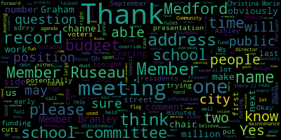
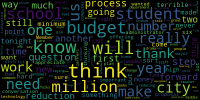
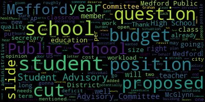

AI-generated transcript of Public Budget Hearing
Back to all transcripts
[Lungo-Koehn]: Good evening, we have a school committee.
Good evening, Medford School Committee meeting special meeting of the school committee public budget hearing.
Please be advised that on Monday, May 6 2024 at 5pm there'll be a public budget hearing of the Medford School Committee held at the Howard Alden Memorial Chambers.
The meeting can be viewed live on the Medford Public Schools YouTube channel, through Medford Community Media on your local cable channel, Comcast Channel 9, 8,
or 22, and Verizon Channel 43, 44, 45, or 47.
Since the meeting will be held remotely, participants can log or call in by using the following information.
There's a Zoom link, as well as a dial by location.
Meeting ID is 940-3096-6735.
Questions or comments can be submitted during the meeting by emailing medfordsc at medford.k12.ma.us.
Those submitting questions or comments must
must include the following information, if you're doing it by email, your first and last name, your Medford Street address, your question or comment.
Pursuant to today's agenda, pursuant to Mass General Lodge, section 7138N, the Medford School Committee will convene a public hearing to members of the community interested in either for or against, or in part or in whole, the superintendent's recommendation of the fiscal year 25 operating budget.
Member Rossell, if you could call the roll.
[Ruseau]: Member Branley.
Member Graham.
[Lungo-Koehn]: Here.
[Zabner]: Present.
[Ruseau]: Member Olopade.
Present.
Member Rheinfeld.
[Lungo-Koehn]: Here.
[Ruseau]: Member Sohir, Mayor Longo-Kern.
[Lungo-Koehn]: Present.
7 present, 0 absent.
All may rise to salute the flag.
I pledge allegiance to the flag of the United States of America, and to the republic for which it stands, one nation, under God, indivisible, with liberty and justice for all.
Mr. McHugh, anytime you're ready to get started, thank you.
[SPEAKER_32]: Yes.
[McCue]: How's that?
Good.
Thank you.
Good evening, members.
First, I want to thank my
colleagues at central office and the administrators who all had a hand in helping to get this proposal together for you tonight.
As many of you know through our subcommittee meetings, this is kind of the perfect storm of salary demands and federal funding expiring.
undefunded accounts, just all converging in FY 25.
So I'll begin the presentation.
[Ruseau]: I just would like to note that both of the student reps are actually here.
[Lungo-Koehn]: Yes, thank you.
[McCue]: The first thing we look at before we even start looking at numbers is what the enrollment might look like for next year and trying to make some predictions around that.
What we see is continued growth in lower grades, and that's been a recent phenomenon.
We do have this small first grade moving into grade two, and that's gonna put less of a teaching demand on that grade level.
And you'll see we're taking some,
savings opportunities there.
But there were other cases of low class sizes, but there were also needs.
We have positions being added to manage class size as well.
Kindergarten growth is another area that we're monitoring.
We did not continue with the kindergarten teachers that we added at the beginning of the year.
We are predicting that we'll have a kindergarten enrollment very similar to what we had this year.
So we think the prior staffing should be sufficient for that, but we will have to make adjustments if that happens.
if our predictions are a little short.
There are some indications that the kindergarten registration is a little bit higher right now at this point in the year than it has been in past years.
And we continue to see some declines in enrollment at middle and high school.
And this is just kind of a focus on the elementary grades.
you can see grade one, grade three, you know, sharp increases compared to grade four and grade five.
And these larger increases will kind of continue into grade four next year and eventually grade five.
And then we have that kind of outlier grade two, you know, in the middle of all that, but actually that,
That grade two is gonna kind of help manage the total school enrollment.
Things are pretty tight at some of these schools, particularly the Roberts.
Then the next slide.
This should be one before that Peter is just this looks at the district as a whole, you know total
We see our enrollment predicted to go up by a net of 14 students, but we see kind of lower growth, or we see declines, as we mentioned, in the middle and high school grades, and then we see that 60 student increase in the elementary grades.
This is,
a graph on kind of the history of budget increases.
And those taken from the FY 24 budget book.
And you can see it's kind of peaks and valleys that on average, you know, you have these kind of two outlier years.
And I think it's 22 and 23.
If you take those out, the average increase has been about three and a half percent.
And then the other thing we wanna look at is the trends on how our salary budgets are increasing versus our non-salary budgets, which is the next slide.
So on this slide,
the percentages you could see are kind of growing.
The salary budgets are consuming more of the budgets, you know, from at one point around 80, 20, and then it gets up to 84, 83.
Our proposal will adjust those differences back down closer to 80-20.
But what it indicates is that the additional resources that are available in the budget year in, year out, are not sufficient to meet the salary.
So there's been a combination of
new appropriations coming in, but some of that salary is being funded by the non-salary lines as they began to shrink.
So it's just something to keep in mind that you wanna keep balance there and salaries are always gonna be the majority of our budget, but it can consume the entire budget, obviously.
So the first group of slides is we're gonna see where are the major areas that our budget's increasing.
And this year to fund our collective bargaining commitments, we are increasing salary lines by a little over $3.3 million.
And then we have a few contracts that will be expiring this year.
as well as non-unit staff who go year to year.
And so we're increasing our undistributed salaries budget by over $600,000 to provide some funds for those contracts and non-unit salaries.
In the Medford budget is,
you know, $500,000 in non-distributed, which is meant to be maybe a contingency.
It's, you know, about a half a percent of the budget.
So we're maintaining that.
You know, it's important to have a contingency in your budget because there'll be unforeseen expenses that will come up.
For instance, if our kindergarten enrollment is higher than we predicted, we have funds where we can add some more teachers if needed.
So I just wanted to be fully transparent that we have, in addition to the 665, we have a half a million dollars in undistributed.
which we had this year as well.
So the next category are these accounts that we've been talking about in subcommittee that have been underfunded for two or three years that we're seeking to correct in FY25.
Homeless transportation being the big one, we budget 130,000 and we spend closer to five or 600,000 every year.
And then substitute coverage, special eds, extended school year.
A number of our students on IEPs get programming for the year round, and so they have a summer program that's part of their IEP.
Legal expenses.
has been underfunded as well.
And of course, buildings and grounds is very underfunded.
And the copy of leases, there's sufficient money for the actual lease itself, which has some copies built in.
But if you go over the set amount of copies in your contract,
that prediction was a little bit low, so this kind of rightsizes that contract.
So these are to bring those accounts up to what the historical spending has been.
And then we have two special revenue funds that are
no longer sufficient to support the staff that we've assigned to them.
And so we are proposing to add $1.1 million to cover positions that are currently funded in the ESSA grant that's expiring this fiscal year.
And then I've
We have 23 paraprofessionals that are funded on buildings and grounds revolving fund.
And this was done in FY 24 as kind of a bridge to get the
paraprofessionals contract settled, but I don't think it was meant to be something permanent.
It's really unsustainable if it was supposed to be permanent.
So I'm proposing that over the next few years, we provide enough money to kind of unwind that and get those 23 paraprofessionals back into the general fund.
And so that will cost a little over $1.2 million to the budget.
So we had 30.8 FTEs funded on ESSA.
We're proposing to carry over 20.2 of those FTEs and the professional development funds that were also charged to ESSA.
very small amount in the general fund budget for professional development right now.
And as I said, that would cost the budget a little over $1.1 million from ESSER, and then there's 10.6 positions that we will discontinue at the end of this year.
And so what are these positions that are in ESSA?
There's an Adjustment Counselor at the Brooks.
There's a number of positions dedicated to the Newcomers Program at the Mississauga and McGlynn, an Adjustment Counselor and Literacy Interventionist at the Roberts, a Power Behavior Specialist at the Andrews, two security monitors for the high school, academic leads,
at the high school, as well as instructional support staff, which are basically building substitutes, and one per school.
We're retaining of the 2.6,
re-engagement specialists we have, we're gonna retain one who will also take on some attendance officer duties that we're bound to implement.
The grant manager for the business office, the director for the CCSR program and the professional development that I talked about.
And so for the positions that we're not carrying over, we had four literacy coaches that are currently vacant, the Director for Data and Reporting, 1.6 re-engagement specialists, three para-behavior specialists, and a nurse floater position that was on ESSER and was vacant as well.
And we have some new spending to propose totaling a little over $1.7 million.
The first is special education.
rate increases issued by the state this year to be effective in FY 25 for all outplacement tuition programs.
And that's at 4.69% and is requiring us to add $224,000 to the budget.
And there was also just kind of a natural
Growth in placements, I think the district does a pretty good job of providing a lot of in-district programming for our special needs students, but some students do require an L placement.
But what's likely in this $239,000 is sometimes students might be placed in kind of a least restrictive setting, and it might not be sufficient, and they have to go into a different program that costs more money.
And then we're asking to add another $100,000 to our net work contracted services account.
It's the current $100,000.
the current budget for this, for the whole district is $30,000.
So that's severely underfunded and it probably should have went into the account fix group.
But anyway, we also need to look at refreshing some of our student and teacher computer equipment.
So we're proposing that
20% of our Apple devices, which are primarily for teachers, be refreshed this year, and then begin implementation of a five-year total refresher of that inventory.
These computers were bought with COVID funds.
Everybody had a scramble.
Everybody had to go on remote.
Computers were bought.
So what's gonna be tricky is down the line trying to maintain this five-year rollout as these computers that were all bought in the same year are aging out.
So this is probably good for this year, but then we might have to tweak it a little as we go forward.
And then the Chromebooks part of this funding is we'd like to buy,
tablets for kindergartners that are incoming first grades, and then they have that tablet through elementary.
Chromebooks for fifth graders that are incoming into sixth grade, and then they have those Chromebooks for their middle school, and then Chromebooks for the eighth graders going into ninth grade, and then they have those for their
four years in high school.
So these funds will allow us to buy, it's about 950 devices to make that plan work.
The district does a good job of trying to refurbish and refresh, but as you can imagine, those computers take a beating, and four years is probably the extent of their life on that.
We're also proposing to, outside of the repair, budget fix, which was on the previous slide, is to add money to contract services so we can begin to do some planning for the future and to purchase services to do project management on some of our projects.
What would...
What I'd like to accomplish with some of this money is to do a space utilization analysis of the, at least the elementaries and maybe the middle, if we had enough money, just to see how many classrooms we have.
Are the classrooms actually being used for classrooms?
Are there,
programs or are they being used for office space?
Can we look at other ways to provide that space and kind of return more classroom to the building?
So anyways, that type of analysis would allow us to take a look at that.
The city also, we had funds in here for,
doing a recommissioning effort for our K-8 schools and the mayor has agreed that she will provide some city capital funds to be able to do that.
With those funds, we're hoping to do that type of recommissioning for all schools.
I only had one school in the budget because that's all the bandwidth I thought we could utilize in FY25.
But that number was 150, it's now 120,000.
The night cleaners at the high school and the McGlynn Middle are under a contract.
And on January 1st, there was a scheduled rate increase for the hourly workers on that contract.
And so this request of $74,000 annualizes that rate increase into FY25.
We're also recommending
putting two more yellow buses on the bus route.
There was a lot of, when I first got here in August, there was a lot of concern about overcrowding on the buses.
And so this would go to address that.
The Medford High School is under their accreditation process, which they go through every several years or so.
They need $30,000 and they have to put up an outside team that comes in to actually conduct the evaluation.
There are teacher teams put together to look at, to respond to questions at that accreditation team.
wants to have answers to.
They currently have a budget of 6,000 kind of for pre-planning work this year, and so this will get that budget up to 30,000.
And then I'm also recommending we increase the school supply account.
I came up with a formula for the principal's offices that allocates money based on the
allocations that are provided for in the foundation budget.
It's not very generous by any stretch, but it does provide them the money for those principal's offices.
The high school principal has a budget of $10,000 for office supplies and other expenses.
We do have a lot of supply budgets kind of filtered out into the various curriculum areas.
So those really have to be looked at as well, because that may provide a savings opportunity in the future once we get this rolled out.
for every school principal's office to get an increase in their supply account, we're asking for 203,000.
And it's a per-pupil basis, so every school will have the same per-pupil amount, but it will be based on the number of students that they have at the school, which is something I heard loud and clear when I met with the principals.
And then we are proposing a new position for payroll in the business office and a position in the human resource office.
It's very challenging to keep up with the weekly and biweekly needs of the payroll and also kind of maintain our NPRS reporting.
fringe benefit management, 403B management, and so this will help alleviate some of that.
So believe it or not, all those proposed changes total up to $8.2 million, which is,
a lot for one year in a budget.
In a perfect world, we would get that, and our budget would go to $79.4 million.
But we're not going to get that, and we have to look at
ways to save money in the existing budget so we can kind of redeploy those funds into other areas where we need the money, which I've just identified.
The first thing we looked at was class size.
And based on our October 1 reporting, the average K through five general ed class size in the elementaries, you could see we're kind of
at the low point 16.5, at the high point 19.3.
So we did look at making some adjustments to boost those class sizes up a little bit in order to achieve some savings.
And
So there are some changes going on within schools that I did not add to this slide because I didn't want to make it too busy.
But for example, at the Brooks, we talked about this low grade 2
enrollment, and that we think that one grade two teacher could be at the Brooks, but we also think we're gonna need a grade three teacher at the Brooks to keep those class sizes reasonable.
So that's kind of a wash, and there's an extra grade four position at the McGlynn, for instance, and a grade one that we're
discontinuing in order to provide that grade one for newcomers, but the count right now is two FTEs from McGlynn Elementary, five from the Missittuck at just about every grade level except for the fifth, and then one at the Roberts, and that's in grade two.
And then we're also proposing that we add a position to create a new grade one newcomers program at the McGlynn, and this is based on kindergarten enrollment and this population of students currently in kindergarten.
And then we're proposing two new special education,
teachers at the Roberts, one for inclusion and one for the connections program.
So the net savings there is $318,000.
And so this would be the average school class size once we implemented those changes.
So going from kind of mid to high teens to
you know, low to low 20s.
We do have contractual language that we have to pay attention to in the teacher's contract around class size, but these are within those, that required amount.
Then at the middle school, and I'll talk about this at the end, but the middle school also has very low class size, but there's reasons around that.
And it gets to the co-teaching model that's employed there.
So for now, we did not kind of take a deep dive into that model, but we are looking at it.
We'll see how we can address that later on.
But we do think that the guidance staffing is rich when you compare it to national guidelines for guidance.
So it's roughly like one guidance council for every 500 students is kind of the national norm.
or goal to have.
Most school systems are much higher than that, like one to 700.
So we have less than 500 students in each of our middle schools, and we have four guidance counselors.
So we think we can reduce that staffing by two.
And in the PE Health, we have four phys ed teachers between the,
Andrews and McGlynn, and we have one health teacher that's split between the two schools.
We think it would be better to have one PE teacher for each school and one health teacher for each school.
So that would increase the health component and would take a savings of one position there.
And at the high school, we waited until students chose their grades for next year to take a look at.
how that affected enrollment in each of the sections.
We also looked at schedules of teachers to make sure that we were fully utilizing the time that's available to the district.
And so we came up with a reduction of six teachers at the high school, and that is affecting
the PE department, technology, performing arts, vocational program, and world language.
We also are proposing some consolidation of our administrative staffing and trying to figure out ways to divide the work
amongst a small group of administrators, but essentially it's six administrators for a savings of a little over $800,000, and it affects athletics, library media, performing arts, special education, student assessment, and world language.
And then we're also proposing a similar consolidation in our administrative assistant staffing.
So we are looking to kind of consolidate some positions so that one administrative assistant has like a broader portfolio of work.
So we're consolidating from two positions to one between nursing and guidance departments.
consolidating from three to two administrative assistants in the high school assistant principal's office, consolidating from two to one between the two McGlynn principal's offices.
Same thing with curriculum directors, consolidating that position in the student assessment support is being recommended to not be continued.
And then there's one position in the before and after school program.
that doesn't have any savings to the general fund, but yet it's also on this list.
But one thing that's not on the slide deck is that
There are currently two administrative assistants in our special ed administration.
And one of those women, as part of her responsibilities, handles a lot of transportation that comes out of that office.
And what we're proposing is to repurpose that position to be more of a district-wide transportation coordinator, because they do a very good job in managing
those services, and it's more of a struggle for the EL bus and the homeless transportation.
And we think if we dedicate more resources to the management of that, there's likely some opportunities to lower costs in that area, I think, as long as the ridership doesn't grow.
And then same with the nurses.
If you look at what the DPH minimums are and kind of apply that to our staffing pattern, we think we can reduce our current nurse staff by three.
There's also one nurse that we're not continuing that was part of the ESSA slide deck or slide.
but it's just noted on this one.
And that ESSA-funded one was vacant at the time for a savings of $211,000.
So all told, these savings come up to almost $2.3 million.
There's 42.6 positions that have been approved
will be discontinued under this proposal, but we'll be adding 25.2.
And of course, the 20.2 of those positions added actually already exist, and they're here, and they're funded by ESSA currently.
So basically, we're kind of redeploying those funds to cover some of those positions, but we do have a net position reduction of 17.4 FTEs.
So just to begin to summarize where we're at, once we apply the savings, we can get our required budget down to $77.1 million, but that presents us with a funding gap of almost $6 million.
And we had two new initiatives we thought we could kind of bring to this problem.
It's not anywhere near what we need to solve the problem, but it's a little bit.
We've talked about implementing a chargeback system so we can recover some of our payroll and HR costs, as well as facilities costs for our fee-funded programs.
that are being supported by Medford public schools that, you know, before and after school would be the big one, but
there's Kids Corner and the Driver Ed program.
And we have to stay away from programs that receive federal grants because they have a different methodology to recover those funds.
It's called indirect costs.
And we'd have to do some more analysis of Title I, for instance.
I don't know if,
If we begin to charge indirect costs, are we going to reduce the number of reading teachers that we have on that grant?
So we have to be strategic before we move into those programs.
But we do have the ability to do that with grant-funded programs.
And then I believe we have sufficient fund balances to charge a teacher that is involved with the MEEP program to the MEEP revolving fund and a teacher in the vocational program.
to charge that to their tuition account.
But these are basically one-time moves.
We would have to revisit this in FY26 because there may not be sufficient fund balances to do the same thing next year.
So when we apply those additional resources to the budget, we get our,
budget down to 76, a little under $76.7 million.
That still leaves us with a funding gap of 5.5 versus our current general fund budget.
We have heard from the city, at least their initial appropriation increase is 2.3 million.
I'm also requesting that if we get additional Chapter 70 money, that we be allowed to use that to support the budget.
There's good indication to believe that the House will increase its minimum
minimum funding for Chapter 70, which Medford receives from $30 per student to $104 per student, and that would result in an increase of $470,000 versus Chapter 70 this year.
And that could also go up by the time the budget winds its way through the Senate.
Unfortunately, the history of the state is that the budgets get finalized in July and August, and that's going to be too late for us.
But I think we'll know.
The House should be releasing its version of the budget fairly shortly.
debating it for about 10 days now.
So our foundation budgets will be republished after the House concludes its deliberations and sends the budget over to the Senate.
So where we're at is, you know, we still have a need of $2.7 million, but I believe that, you know,
from the last subcommittee meeting that this is the budget that the school committee wanted to see, you know, what are the real costs?
Where do we have gaps?
How much do we need?
But unless, you know, in the event there's no additional resources coming to the budget, we will have to go back and look at positions again.
I mean, we're not,
We haven't, as part of this proposal, we haven't looked at paraprofessionals or custodians or security monitors or adjustment counselors.
And then we'd probably have to rethink some of our new spending and kind of manage that back.
Still more work to done, more work to be done.
So I'm happy to answer any questions you might have or any thoughts you want me to take back and consider.
certainly value your input as to where you think we might be cutting too much.
I think the way this is
this might roll out is that we're gonna have to come back and kind of see how we address that 2.7.
And there'll be an opportunity if you think we made a mistake in one or more of these areas with one or two positions, it'd be an opportunity to add those back as part of a new cycle of spending reductions.
[Lungo-Koehn]: for chair, if I may, thank you for the presentation.
Does the 2.7 take into account potentially moving the 20%?
No, no, it doesn't.
That'd be a $500,000 reduction.
[McCue]: Yeah, it's about 477, but that's, you know, close to 500.
[Lungo-Koehn]: Thank you.
member Graham.
[Graham]: Just a couple of questions just make sure I'm clear on that.
reductions that are outlined here at the high school are saying six FTEs, and there are six departments listed, so it sounds like a reduction of one teacher per department, is that correct?
Administrator, yeah.
And does that mean our course offering is being reduced in some way, or is that, are we able to maintain the offering that students selected with this reduction of six?
[McCue]: Yeah, the proposal is based on the,
what students chose.
Now, if there was a section that only had four students or five students in it, maybe that section doesn't run, but what the students suggested that they want, what the school department is saying they required to take to earn their credits, those are not affected.
[Graham]: And I think we'll hear from some folks later on, but specifically, there's some questions about
drama classes and drama club and all that.
So I know that there's a new theater offering this year.
Is that being eliminated?
[McCue]: It was because the enrollment was low.
Okay.
But part of this public hearing is to get feedback.
from the school committee to get feedback from the public.
And we're certainly gonna be listening to see how we can kind of meet the needs of everybody in the context that it's just a very difficult budget.
[Graham]: Second question is when you said we're reducing our nursing staff to align to the DPH minimums, what are those minimums?
[McCue]: One nurse for every 500.
[Graham]: Okay.
Thanks, Jerry.
And I guess my other question is like, we're already reducing, you know, a net reduction of 17 point something is that's about 2.2.
So it sounds like if we needed to close another $2.7 million gap, we'd be looking at like another
round commiserate with that size, where would those teachers come from?
[McCue]: Well, I just did a quick analysis of our new spending and
with the caveat that it kind of goes against the needs that I described, that maybe we could trim that back by 800,000 and kind of take a two-year view and rolling all that out.
And then the balance in the absence of any other resources would be around 2.2.
So very similar to the proposal we have currently.
[Graham]: So another 17-ish people.
That's what you're saying?
[McCue]: Yeah.
Although, yeah.
And it depends on the positions and the salary they command.
So this particular mix was a net 17, but it might be different.
if we get into positions that come in, you know, have lower salaries.
[Graham]: Got it.
And then I think the other thing that sort of struck me, and this is not a comment for you necessarily, but just as a general comment, when we talk about enrollment trends and we talk about seeing declines continuing at the middle school and high school, that will never change if we keep doing this this way.
[McCue]: We did, I did say, I would talk a little bit about the middle school so we did you know that has the co teaching model and, you know, that was a district decision at some point.
It requires a much larger investment in staff in order to make that work.
Co-teachers get more prep time, there's more need for Unified Arts to cover those prep times, so there's a lot of
resources being deployed to make that work.
So I think looking back, we have to figure out a way to say, is the investment worth it?
Are we seeing the results that we should be seeing?
Or is there a different way to go forward on that?
But the staff savings would be significant.
[Graham]: And then I just wanted to say, you know, thank you.
I know this is like the worst work in the world to do.
And I will say, I appreciate the clarity.
I know exactly what this budget proposal is and isn't.
I'm not sure we've ever quite had that before.
So I think that's important.
I also think the sort of the steps and the care that you've taken to be in conversation with our union partners, where there are reductions that are being put forward
in advance of learning about those things here on the floor is really important.
I know that's really hard work.
I know it's terrible news to share.
I know it's terrible news to receive.
But it's even more terrible to learn that here.
So thank you for taking care through this process to be appropriately transparent and also
in collaboration or in conversation at minimum with our union partners.
So thank you.
I really appreciate that.
I think we need more clarity.
We need less big budgets.
And this really is a great example of what a transparent budget looks like, even if the answers are really very terrible.
So thank you.
[McCue]: Okay.
Thank you.
[Graham]: Member Reinfeldt.
[Lungo-Koehn]: Yes.
Thank you.
[Reinfeld]: Hi, hello.
I just have a couple of questions regarding the proposed budget.
So on slide 15, there's two positions being proposed.
It says payroll slash HR new positions, capacity and supervision.
So with the current proposed budget cuts, could you just elaborate on what these two positions being added with considering they cost roughly $150,000 annually?
[McCue]: Yeah.
Those, so for instance, one is for payroll.
So the staffing for the entire district for a budget that's 80% salary.
there's two payroll positions.
And this year, one of those individuals went on maternity leave.
So that effectively cut the payroll staff in half.
And we've figured out a way to kind of work around it.
Some of our administrative assistants have stepped up and we're kind of spreading out the work.
but our assistant finance director has taken on a lot of that payroll as well.
But my read since I've gotten here is that
we have a very difficult time keeping up with the work that we have.
So the payroll itself, the keying in, changing deductions when people request it, changing payroll.
Payroll is changing throughout the year as people are in degrees or they get promoted into a different job.
That,
the growth in that area has left very little time for those payroll clerks to address kind of the maintenance of the budget.
There's a whole, there's a significant requirement for the,
MTRS reporting to keep those, their database current.
So we're having problems where, you know, teachers are having difficulty
trying to retire or trying to project how much they would get in retirement because we were just not able to respond to all those inquiries.
And then there's the supervision.
So the way I looked at the office was we have an accounts payable department, we have a payroll department, one person,
for two payroll people, one person for accounts payable, and that to me is kind of a logical staffing.
So the rank and file people have some extra resources to go to ask questions on how to do their job and to plan out their work.
For the HR department, same way, it's just the whole, the number of positions that we have, the whole onboarding process for new, the priority is obviously teachers at the beginning of the year, but we're in desperate need for substitute teachers, and if people are emailing us saying they would like to work as a substitute, we can't get to them.
because we're so deep into onboarding instructional staff.
So it's just that the amount of administrative work has just grown beyond the staffing levels in those two departments.
[Reinfeld]: And then I just had another question on slide 19 for the proposed general ed class size from schools.
Yeah, for 2025 for the Brooks it'd be up to 19.9.
The McGlynn 22.2, Mr. Tuck 22, and then the Roberts 20.5.
Do you have any data about the possible negatives of increasing classroom sizes to that size as that could potentially put a lot of strain on teachers and educators in classrooms?
[McCue]: Well, I look at two things.
One is, how do we get our funding?
So Chapter 70 makes some assumptions about class size when they put together the foundation budget.
And I think it's like
22 or 25 at the elementary and then 22 or 25 at the middle, and then it's actually 17 at the high school because of all the honors and AP classes, there's just on average the class sizes are going to be lower at the high school.
So if we're not maintaining our class sizes somewhat around those numbers, we don't have to hit them exactly, but we should be in the same ballpark.
And if we're not, we're going to be diverting resources from one area to put into low class sizes.
The research is very mixed on whether a lower class size actually improves student performance.
It's the most expensive type of educational reform that you can do.
does tend to, obviously, in specialized programs, special ed actually has legal requirements about what their class sizes should be.
Our EL program, the class sizes should be lower, obviously, so more one-to-one time with the teacher.
And in the lower grades, pre-K and kindergarten, there is evidence that those low class sizes are probably more effective.
But when you start to move up,
it's kind of a mixed bag.
So my view is, let's not be too low, let's not be too high, but let's try to keep it.
And I think low 20s is kind of a good spot to be in.
Anything more than that, I think there would be a status strain, but
If we have to cut 2.7 million dollars we might have to think about increasing those slightly again.
If we have no other way to do it.
[Lungo-Koehn]: Thank you down.
Member right felt yes, thank you.
[Reinfeld]: All right, I'll start with what I like, which is I like the transparency and the clarity here.
So thank you again for that.
And I really like that this reflects the past year of spending.
So that's incredibly helpful.
And that moves into my first question.
I'm just gonna go in numerical order.
Slide seven, this didn't appear on the slide, but you mentioned that there was 500K for undistributed.
Was that used for its intended purpose last year or did that end up being flexed?
[McCue]: Well, the year before that, I'm trying to, I think it was like one and a half million dollars.
And I don't know, at one committee, the whole, we talked about the fact that to make the 24 budget work, those budgets were reduced.
But part of that money is meant to cover negotiations for contracts that are being negotiated.
And
that money was needed to make the budget balance.
And so that went to fund those contracts and was not sufficient to fund the contracts that got settled.
So it's just helping to allow us to finish the year with a balanced budget.
[Reinfeld]: Thank you.
Slide 14, you mentioned new technology.
Is this coming with added security concerns or costs to maintain safety, privacy, all of that?
[McCue]: We've included the educational package for Google.
And that, right now, we're using the free version, the educational package.
it will provide a lot more security for that programming.
But we really need to develop some strategic planning around technology to address all these needs that we have and securities, you know, top of the list.
[Reinfeld]: But that's one of the positions that is
potentially?
[McCue]: No, so there's two, the technology where we're adding money is in our network infrastructure, to keep that going.
There is a technology teacher at the high school that we're proposing.
Thank you, Peter.
We're proposing that we're gonna take a savings there just because enrollment is low.
Okay.
And there's other technology teachers at the high school as well.
[Reinfeld]: Right, but there's a director position as well.
[McCue]: Yes.
Yeah, and we would see that consolidated with the rest of our technology staff, the management.
[Reinfeld]: All right, I'm always gonna have this question on slide 15.
I see a lot of contract services listed.
What assurances can you give me that contracting these things out is more cost efficient than doing it in-house?
[McCue]: Yeah.
Is that for facilities?
[Reinfeld]: Yes, building.
[McCue]: Yeah, yeah.
Well, those are actually, we're already contracting them out.
[Reinfeld]: Okay.
[McCue]: So we're not budgeting sufficiently for what we're already doing.
On the proposal for $120,000, those services are like architectural services, project management services.
So they're not, we're not proposing to privatize any work that's currently being done by existing staff.
[Reinfeld]: All right, on this same slide, you mentioned the supply budget.
Is that going to reduce the, I'll call it an unspoken burden on individual staff members for supplies?
[McCue]: I would like to think so.
[Reinfeld]: In terms of, are those for individual classrooms, or are they for school-wide?
[McCue]: On a whole, the supply budgets are low.
So I think they can be built up.
You know, I would hope that, and I'm sure that, you know, we have some very good principals and I would hope that they would wanna, they just haven't had a sufficient budget.
So when they have to say no to a teacher and the teacher needs something, the teacher, you know, goes and procures it herself.
[Reinfeld]: I'm glad that we are providing more of that.
Member Graham already asked about class sizes and offerings.
I would love some more information on the McGlynn position, the consolidation of the administrative position there, given that those are two schools and each of the other schools has its own administrative assistant and also given the particular vulnerabilities in that school's population.
[McCue]: Yeah.
You know, the role of administrative assistants have changed because administrators are now routinely do a lot of their own work, emails, you know,
so that we still need administrative assistance to deal with parents that are calling in and submitting purchase orders for supplies.
But it was just felt that there wasn't sufficient workload for the number of administrative assistants that we had at the McGlynn.
[Reinfeld]: I'm sure we'll hear about that.
Yep.
All right.
And then my, my very last question was actually building a little bit on member Graham's question about the DPH minimums.
We, my questions were, when are they, where are we and how do our health needs and this, the health needs question might be for some of the people out here compared to other districts with their ratios.
[McCue]: Um, and those are minimum, so they're not meant to be, um,
If you can do more than that, it really depends on kind of the acuity that they're dealing with.
So I know nurses are very good about who shows up in their office and what they have medications that they have to give to particularly younger students.
And, you know, we're,
In the case of the Brooks, we're a little bit above 500.
The remaining schools are below 500, but close to that.
And I can furnish you with some staffing analysis that we've done to show where we're landing with that.
But, yeah.
What's often the case is that you have, just to simplify it, you have not enough work for two people and you have too much for one person and you can't, so we're looking at coverage and do we have to dedicate staff to one school?
Can we dedicate some staff and have some staff move around?
So I think everybody said this in one way or the other at the beginning.
It's not, we don't take any pleasure in having to implement these, but we know what we have in obligations.
And I think
In my experience, the worst thing is to have budget chaos because when you look at what happened in Brockton and North Andover, that to me would be a lot more disruptive.
Let's figure out what the pain is and then see if we can make some adjustments.
Nobody's gonna be happy with the end result, but
We have, that's the only thing a business manager is required to do by law is to make sure the budget's balanced, and then other duties as assigned.
So we're gonna have to, we need to get to a balanced budget.
[Reinfeld]: Thank you, I understand that, and I will have questions for the administration at later dates about what the plan, if these changes are accepted, what the plan is, because just because you take people away, the work doesn't go away either.
[McCue]: Right, exactly.
And we've made some preliminary...
So we have put a considerable amount of time into, on a very preliminary basis, thinking about how it would happen.
And then the next phase would be to actually sit down and kind of plan out how the work will be reallocated.
[Branley]: Thank you.
[Lungo-Koehn]: Member Brantley.
[Branley]: Well, I'd ask if I'm making faces, but I already know I am.
So I'm trying to,
center myself because this is obviously horrifying.
And as somebody who has worked in an elementary school in this district, I don't see how any of this could even be possible.
I'm not gonna take it out on you, Jerry, because I know you're doing a job and I thank you for it.
So it's not personal, of course, but I have- I don't take it personally.
A lot of questions.
So you keep saying we.
We came to this decision.
Who's the we?
[McCue]: Well as a group is it's not Jerry McHugh by himself we sit senior staff.
Some ideas are rejected because they're not workable.
Some ideas might have merit and you kind of keep working them.
But we try to be as thoughtful as we could be about the cuts and try to balance them against some kind of standards that easier to do with class size than it is for some of the reorganization work, obviously.
[Branley]: We, okay, thank you.
Let's see, I'm just gonna go page by page.
The ESSER funding, those positions on this page here, Brooke, let's see, I'm on 11.
Are any of those gonna be added to the general fund?
[McCue]: Any of those positions?
They all are.
[Branley]: They're all added, okay, I just wanna make sure before I go kooky.
[McCue]: That's kind of,
contributing to our funding needs.
[Branley]: And I have to agree with our student rep here, the two full-time employees with payroll and HR that are being suggested.
You said the words, it's hard for them to keep up.
So I think it's gonna be hard for teachers to keep up.
I think it's gonna be hard for nurses to keep up.
I think it's going to be hard for secretaries to keep up at this rate.
We're burning people out as it is.
And this is going to just increase that.
Yes, it would be hard to work without two more full-time people, but it'll also be hard to work with only one nurse.
It will also be hard to work with only one administrative assistant at the McGlynn.
It is two separate schools.
It is two separate schools.
I know they're housed in that same office, but that doesn't make any one more valuable or less valuable than the other.
They're two separate schools.
It doesn't mean that one can absorb the work of the other.
And as an administrative assistant myself, I don't see the people that are above me that I'm an administrative assistant to do more work on their own.
I see that we're leaned upon more and more every day from something as simple as the coffee machine being jammed.
Sometimes I pretend I don't hear them saying to me, Nicole, Nicole, I need your help.
I'm like, it's a piece of paper.
You can do this.
Let me show you.
I think it's almost offensive to think that
you know, their need is less because it truly is more.
And especially at an elementary school level where children are coming into you, parents are coming into you, the phone never stops.
That alone, I don't know how one administrative assistant is gonna just handle the phone alone, let alone all the chaos around them.
So how do you choose
that elementary school over a different elementary school, because there's not anybody else there.
But that doesn't mean that the administrative assistant for the middle school can handle what is going to be put on her from the elementary side.
It's almost unfathomable to me to think that that is a position that could at all be cut.
So that's one thing.
Okay, kindergarten teachers added in FY 24 will not be continued in FY 25, but did we not see that the enrollment is increasing in lower grades?
[McCue]: Yes, but the existing kindergarten staffing that we have is sufficient, I believe, to handle that enrollment.
I would question the need for those
additional kindergarten teachers this year.
I mean, maybe one or two, but not across the board.
But I don't think people- So none will be saved?
Pardon?
[Branley]: None will be saved, correct?
[McCue]: Well, they weren't funded for.
So if they were to be saved, then we would have to add them into the budget this year.
So there was no funding.
There was a directive to add them and kind of make it work.
Has anybody- And that happens during the year, but you have to fix those positions in the budget the following year to be accurate.
[Branley]: Has anybody shadowed anybody in the kindergarten?
Just curious.
Yeah.
Anybody shadowed the nurses?
Has anybody shadowed any of these directors that are being cut to see what's actually happening on a day-to-day basis?
Because I can tell you... We have been doing a really good job, I think, trying to get job descriptions.
But what's written on a piece of paper, what your job is, when you walk into that building,
you are a hundred things to hundreds of little humans that can't wait.
They can't wait.
They're throwing up, they're pooping, they're doing it all.
And I don't care what grade they're in, they're all doing it.
So I think to, you know, cut jobs without literally
knowing hands-on, on the ground, what exactly is happening.
I don't know how much more existing staff, if these are all cut, can handle.
How can you handle it?
How can you be there from eight to three, which I know is not what a teacher's job is not eight to three, believe me, I know that.
So it's 24 hours a day.
But how do you...
How does anybody absorb even more?
What is the toll we're going to take on everybody?
And if we take the toll on our teachers, guess who it's falling down onto?
The kids.
These are our babies.
We want enrollment to go up.
It's never going to go up like this.
Never.
Never.
People are going to run away.
OK, I'll keep going.
strain on staff, yes, clearly.
I can't imagine being in any class with 22 kindergarten children or 22.2.
I don't know where the .2 comes from because guidance counselors.
I know, I hate averages.
So proposed saving initiatives.
Do guidance counselors teach guidance classes?
Yes, correct.
Okay, so if we cut them, who's doing that and still guiding?
[McCue]: Well, there'll be less of it.
And it's gonna be up to the principal to develop a schedule with the staff that they have.
[Branley]: The principals?
[McCue]: Correct.
[Branley]: So maybe they rely on the administrative assistants a little bit more.
And I know these are the numbers, I get it.
I get that this is real dollars and there's $5 million or $7 million, the number just seems to keep adding up here.
So I'm also curious, if we eliminate directors, do directors walk out the door or do they then absorb a teaching job?
How does that work?
[McCue]: Well, in any of these cases,
We would try to work as best we can to make sure there's a landing spot for these positions.
We can't always do it because there's certification requirements.
That is a question right now, and we believe that they're two separate unions.
So I do not believe there's an automatic claim to a teaching position if you're coming from the administrative ranks.
there's gonna be bumping.
So the budget is really about cutting positions and not people because the budget, there's bumping in the contracts and those people might still have a job because they have seniority and somebody else might have to go.
But that is something that we looked at.
And if there are teaching positions for some of these administrators, of course, we would love to keep them in the district.
But it's one of those, the answer is it depends.
[Branley]: Yeah, so I know you said it's a position.
Not a person, but at the end of the day, it is a person.
It is at the end of the day.
It is at the end of the day, because if you're bumping someone, someone else is out.
[McCue]: Yeah, no, totally.
[Branley]: And that's less, and I know you realize that.
[McCue]: I didn't mean to that, yeah, to say it.
[Branley]: And I can't imagine any of these schools working with one body less at this point.
I really, it's gonna be detrimental, it really is.
Yeah.
Okay.
Yeah, McGlynn principal office consolidated from two to one.
That's outrageous.
Reduce nursing staff.
And I'm sure the nurses that are here can help us understand that.
Can someone tell me how many students are at each elementary school just to start there?
[McCue]: Yes, I can furnish you with an analysis that they did.
So it's based on what we predict the enrollment will be next year and how many nurses per student.
[Branley]: So maybe the nurses can answer my question a little bit better.
working at the Brooks.
I used to say to Nurse Allison all the time, I feel like we should have one of those little deli ticket things here.
Because not only are there emergencies all day, I mean, I can tell you what happens in the kindergarten playground pretty clearly.
What happens if that nurse needs to, they leave the room, now the nurse's office is closed, and there's another emergency?
Field trips, how do we manage field trips with less nurses?
Things like this that keep popping into my head.
I don't know how these things are gonna get done with less bodies.
It's not gonna get done?
Let's...
That's really sad.
It's not okay.
And then if a nurse is absent, what happens?
Everybody hold on.
[McCue]: We'll be up to the director to- Do we have a director?
Well, we have a position in the budget and we have a director.
So we expect that we will have a director.
[Branley]: So we'll have a director for the nurses.
Yes?
[Douglas]: Yes, we'll have a director for the nurses.
[Branley]: So the director for the nurses will figure that out, right?
Okay, great.
[Lungo-Koehn]: Member Brantley.
[Branley]: Let's see, what else?
[Lungo-Koehn]: Member Brantley.
Yes.
Ms.
Hines was the director.
She just took another job, so I'm sure it's posted.
[Branley]: There's a lot of jobs posted.
a lot not filled, and that's what scares me.
Because if it's not filled, then what?
We need to know the then what's here when we do something like this, because this is real day-to-day challenges.
And I know, even for myself, I've needed the school nurse at times.
I got COVID when I worked at the Brooks.
How many times I was checked for lice?
Luckily, never got it.
I don't know how.
But do you know how many times my head was checked for lice?
Do you know how many times I had to go to the nurse's office for something?
A student injured me.
That happens.
This is real, live stuff that's happening every single day.
And we're, I don't want to use the word failing, but I'm
failing, happening.
Identifying other resources.
You said we'll need to revisit this in 2026.
Will there be funds?
So we're cutting, but then we're gonna have to revisit again for even more cuts.
Great.
Okay.
All right, let's see.
This page.
You said we haven't looked at paras, custodians,
Great.
Let's see, my next page.
So I talked about foreshadowing the people whose jobs were cutting.
[McCue]: We hadn't looked at those for cuts, but we still have a budget gap to look at.
So of course, the question is how are we going to reduce that 2.7 down to zero?
So I just gave a group of positions that we didn't intend to,
but everything would have to be on the table for a round two of cuts.
[Branley]: Okay.
Individuals that are being cut as in directors, how do we know if they're cut, someone's not necessarily replacing them, correct?
[McCue]: Correct.
[Branley]: Okay.
So how do we know that the people are gonna step in and do their job are qualified to do it?
because it's gonna be someone under where the director was originally.
So how do we know that they're qualified to make the decisions?
[McCue]: There's a whole, well, the administrators all have their administrative certification.
So I'm trying to think, I mean, everybody has kind of an area of expertise, but- But they don't have the certification.
But I don't know if there are, you know,
certification requirements outside of the general administrative certification for the positions we have.
So they should be able to be an administrator, you know.
in any of our programs.
Some are gonna be better than others in certain programs.
I don't deny that.
But there's a whole process once the budget gets passed, where we have to sit down with our unions and kind of figure it out collectively, how we're gonna implement these reductions and who, what are the seniority lists and how will we,
reorganize the work.
So that's the process that will happen.
[Branley]: So basically, if you're the senior in that group, you're most likely going to absorb some of the work.
[McCue]: Yes.
[Branley]: Well, that stinks.
Let's see, what else?
[McCue]: The whole thing stinks.
[Branley]: It really does.
Yes, I can totally agree with you on that.
Let's see.
The director, we talked about that.
We talked about that.
Consultants, how many consultants do we have working for us?
[McCue]: Is this the $120,000 proposal?
Yeah.
[Branley]: Or anybody else?
[McCue]: There's not a lot of them.
I mean, we use services for E-rate.
take advantage of E-rate funds.
We have consultants that do Medicaid reimbursement.
You know, any of our
Trying to think, you know, in the technology area.
[Branley]: Get a list, if we can have a list of who is a consultant.
[McCue]: Yeah.
[Branley]: Are there any cuts in assistant principals?
[McCue]: No.
[Branley]: So no assistant principals will be cut?
[McCue]: No.
[Branley]: Across the board?
[McCue]: Across the board, as of today.
[Branley]: Jerry.
[McCue]: We still have 2.7, we have to deal with it.
[Branley]: You're messing with me now, come on.
[McCue]: Yeah, listen, I don't think, I think assistant principals are very important, just for, you know, our principals are often at meetings, out of the building, somebody has to be in charge of the building in case of an emergency.
Yes.
So I'm with you on that.
[Branley]: I mean, I can't,
I mean, I'll just use Mr. Tucci as an example, because I always say I've been Tucci-fied, because I'm at my sixth year at the McGlynn Elementary School.
I'm gonna miss it terribly next year.
I don't think the man takes a day off.
I think he's- Yeah, he's very good.
He's exemplary, as are all of our principals.
But I can't imagine not having an assistant principal.
[McCue]: Yeah, I agree, I agree.
[Branley]: And especially at the high school,
Have we decided on any cuts in the central administration office?
[McCue]: No.
[Branley]: None?
[McCue]: None.
[Branley]: Not one.
[McCue]: The staffing is pretty lean.
[Branley]: I'm sorry?
[McCue]: The staffing is pretty lean.
[Branley]: I think all our staffing is lean.
[McCue]: Yeah.
but some are leaner than others.
[Branley]: Okay, I'm gonna stop.
So I just have one other question.
The raise that we received as school committee members, where did that, what was that funding from again?
[McCue]: The budget, school budget.
[Branley]: Our raise?
[McCue]: Yes.
[Branley]: Yeah, there's no more money in there?
[McCue]: Pardon?
[Branley]: Is there no more money in there that we could use any of that for this?
Because it seemed really easy for us to get our raises.
[McCue]: Well, that's entirely up to the school committee.
Those stipends have not been increased for a long time.
True.
Other staffing, certainly the last couple of years there's been
efforts made by the school committee to address salary concerns of the unions.
So I don't think what was proposed is outrageous and it does, it's not that much money to kind of contribute to the problem, but if the stipends- I think every cent contributes to the problem, right?
Yeah, if the stipends were reduced, that would be added to the pot to deal with the remaining funding gap.
[Branley]: Lucky for you, I'm all done.
Thank you.
[McCue]: I don't disagree with a lot of what you said.
[Branley]: And I'm not trying to be cranky, but obviously this hurts.
My children are in this district.
My family's in this district.
This, this is our family.
Yeah, this is our community these the people that go home into our neighborhoods.
These are the kids that stand in front of my house and for the best every single morning.
These are the people that pay taxes.
And so it's, it's just so frustrating to me because I think when you work in a school.
you have such a different perspective of what's happening day to day.
And I'm no expert, I'm no expert at all, but I think it definitely gives you a bird's eye view of really what is happening on the ground.
And I think, you know, I'm sure we have plenty of people here that would like to speak and I really encourage everybody to speak and to write emails and to send letters because this is a priority.
So thank you very much.
[Intoppa]: Thank you very much.
Thank you, Jerry, for putting this together and very transparent.
While I don't agree with, you know, all these cuts that we're doing, I really appreciate being able to see where we are.
There's not a lot of guessing.
We can actually see it.
I am very new to this.
I've been in two months to the day.
So my apologies if my ignorance or my lack of understanding precedes what I'm about to sort of talk about.
It's the only way you can learn it.
I know.
I dive into the deep end.
Thought possible two and a half million deficit.
Now it's 250.
Like diving in the deep end real hard right now.
Some emails that I've gotten
in particular are around performing arts, athletics, nurses.
And I thought, I guess these are more comments than questions.
And again, I wish I knew how to find the money.
I wish I understood that, but I just don't.
So I apologize if I'm not giving too many solutions, just more of the concerns that I have.
Performing arts is on a decline, and by cutting that, I'm really nervous about the direction we go.
Performing arts aren't just an activity.
It is how we integrate culture, how we keep tradition, how we keep things alive in the city.
And, you know, we just had a great performance from our drama club with Mama Mia, and also just some other initiatives.
You know, we're seeing them give back to the community in ways that, you know, I couldn't even have imagined when I was at Medford High.
So I really...
You know, we just named the office after, you know, former school committee member, Lita DiGianto-Masso, and I'm afraid by going down this path, we're sort of going back what she was fighting against.
You know, the performing arts are a huge staple to how we keep the users of our schools there.
In terms of, what was I talking about, nurses, I was a student with,
medication that had to be stored.
And one of the things that I think I am not seeing sort of brought up is also, you know, we cut nurses, we're also cutting the facts that
I even in the upper levels could not take my medication without a nurse being there.
That includes epinephrine.
If I don't carry an EpiPen on me, there's one stored there.
We need someone to be able to run around the maze that is Mephiti Complex to find someone who may need to administer it, as well as I need to find time out of my day to go and meet with one of those nurses, hoping there's one not helping another student to take the medication that allowed me to help me learn every single day.
So that's sort of one of the things that I just wanted to say in support of the nurses here and just wanted to give that insight because I'm not really seeing that being mentioned, but no one really sees that unless they experience it like I do.
Sorry.
[McCue]: Yeah, the complement of nurses at the high school is the same as it is this year.
[Intoppa]: Yeah.
And it's just, it's not even just the high school, it's the elementary.
I've been taking medications since elementary school, um, elementary school, middle school and high school.
Um, and so that, that doesn't really change.
So it was always packed to even back then when I was there in 2019.
Um, so I'm really, really concerned about how many, you know, employees were cutting, uh, in terms of athletics, um, that department in terms of it's already thin enough.
And I, I'm not sure what position was cut in the athletics department.
[McCue]: Have you run administrative?
[Intoppa]: One of the administrative?
[McCue]: Yeah, the assistant athletic director.
[Intoppa]: Because the assistant athletic director that I know that's in there is like the backbone of that entire athletics department.
And that is no diss to anyone in that department at all, but the individual who is in that is at everything I've ever been to and is there to make sure that that program stays running.
So really looking at, you know, it's numbers but it's also people and support, and who are they going to lean on if they're the ones there all the time anyways.
And then in terms of, you know, looking at technology spending, we've sort of digged ourselves into this hole of relying on Chromebooks and technology because of the pandemic.
I guess when it comes to technology, as someone who's used that technology pre-pandemic, knowing how unreliable it can be, I'm a little concerned about pumping more money into it until we figure out a solution.
Because I feel like every other Chromebook had a missing key.
And also, I'm a little concerned about putting so much money towards tablets for kindergartners instead of the support that they need to help teach those kindergartners.
hands-on learning tactile that, I mean, I'm not an educator, but I just happen to be a designer and an artist and know just the value of tactile hands-on learning.
And I would almost rather look, see that money, if that money had to go towards something, be more towards school supplies or hands-on learning than electronics.
And I don't know how that makes me sound, but I don't feel like our kindergartners need tablets, they need people.
And so that's a lot of what I have to say.
And there's a lot of things, obviously, you know, I'm happy to see more increase in special education services.
But there are a lot of alarming factors that I don't know if I fully wrapped my head around in the last 48 hours.
And, you know, thank you to everyone who's here to speak on behalf.
And I'm sorry by taking up more of the time that doesn't allow you to.
I just wanna say that there's, I may have more questions or comments going on.
For now, that's what I have, so thank you.
[McCue]: I mean, I think one of the good things about trying to present the budget earlier than normal is that we do have some more time to discuss and ask questions.
I will say with the technology, there's a lot more use of instructional technology.
So the only way for students to access that is through some kind of a device.
And, you know, the old way was you'd have like four desktops in the corner of the room and you'd share that.
And now, you know, today that's, you know, it's just a different model from what we used to do.
But that's the type of thinking that we have to do right now.
We can't, if somebody wants to make a proposal that we're not gonna use tablets anymore and we're gonna hire another and that could fund another teacher, those are the types of trade-offs that we have to talk about.
But I would say that, you know,
you know, there's pluses and minuses to every idea.
And if you say, let's scrap instructional technology at the elementary school, you're gonna have a different set of people in the audience.
[Intoppa]: Right, and I think, I'm sorry, just a point of clarification, I guess on my point, is it to cut technology?
It's more to look at and consult our users who are administering it to see where they might find it best.
Do we need to invest more in technology?
I don't have a teaching degree, so I don't really know what that is like, but.
definitely leaning more on our professionals that are our faculty to see where there are technological gaps and fixes on a day-to-day classroom basis.
So thank you for the clarification as well.
Again, appreciate the work.
[Lungo-Koehn]: Thank you, Jerry.
I think, oh sorry, member Olapoday.
[Olapade]: I'll actually yield my time to our student representative if they have a question briefly.
[Reinfeld]: I just wanted to ask a follow-up question.
I'm not sure, I may have missed it in Member Bransley's questions, but if the secretary positions are being cut at the McGlynn and other schools,
I just wanted to ask a question if, because I'm not sure, it may have been clarified already, if APs were on the, being considered for being cut, because if the workload is being put onto the secretaries, I may be mistaken, but for the McGlynn, it's roughly, for the elementary school alone, it's 500 students per one secretary, and at the high school, based on the cuts proposed, it's gonna be 600 students per secretary, so if AP,
AP assistant principals are cut in the future, then who's going to do the workload?
Because the workload from the secretary is going to go down to the AP unit.
If that works, someone's got to do the work.
[McCue]: we are not proposing any cuts to our assistant principal ranks.
And I don't foresee, I foresee that remaining even as we go through more budget cuts.
But just with the caveat that $2.7 million is a lot of money to come up with.
But I totally agree with you on assistant principals there.
The schools,
can only run when there's a team leadership team in place and those include the assistant principals.
[Lungo-Koehn]: Remember all about it.
[Olapade]: Thank you and thank you Mister McHugh for being here and being as I think transparent as we've all like you to be.
I'm only go through this process.
So I, like my colleagues, have a handful of questions.
So on slide 14, the question about special education in district programming that we do, do we have an idea or data on our neighbors and how they deal with in-program versus out-of-city program and what that looks like for us?
[McCue]: I could discuss that with the director.
Each community handles it differently because
The students are very different.
So when I worked in Chelsea, we have a lot more students outplaced because of, and it's all based on the needs of the students.
First of all, we don't have the capacity in our schools
to extend programming.
There's a very, there's a robust in-district program for students with autism.
But when students, there's only so much therapeutic support that a school district can offer.
And sometimes students need
a placement that's more therapeutic with education rather than education with a therapeutic component.
So oftentimes we have to look at outside providers to provide that education.
And it's all based on a instructional education program that's drafted with the parent and the teacher.
And that just spells out the requirements.
It's like a contract that's in federal law that that,
those services, that type of educational model has to be provided.
If it can't be provided within the school, then look for outside placements to provide that education.
[Olapade]: Thank you.
And then on slide 18, one of the proposed savings initiatives.
When I'm looking at the positions that are being reduced in the McGlynn, Missittuck, and the Roberts, for example, I think what I'm trying to understand is
When we're analyzing costs and we're comparing it to student and teacher preferences, you mentioned that earlier that you were deciding how we're going to kind of reduce some positions in other vocational arts, science, arts programs.
What takes priority?
How do we determine where we need to move money around or where we need to improve our costs, if that makes sense?
Yeah.
[McCue]: Well, we try to evaluate those, you know, based on some kind of criteria or standard so in elementary, it's a little bit easier to look at class size because students are basically typically in front of, you know, the same teacher for most of the day there's specialists that come in.
for prep period coverage and they might go to library or go to a music room for music and then when you get into the middle grades, it's really based on schedules, more so than than strictly class size so because of the variety of
instructional offerings that are offered at those grade levels.
So then you're looking at, you know, are you fully utilizing all of your teachers to support the program?
So, you know, it's nice to have extra teachers around.
I don't deny that.
People are out.
you, you know, it's very disruptive when teacher calls in, you know, if they have, if they're sick, we don't want them to come in, we want them to stay at home.
And to have
extra teachers to be able to pick up that coverage is ideal.
But it's just that we're asking a lot of the school department budget to pay equitable salaries, to be offered health insurance with 15% co-pay.
to have all this programming and have sufficient staff so that nobody gets burnt out and everybody has a good work situation.
So it's just, we can't do that all.
Even, let's say we didn't have ESSA.
to deal with.
We didn't have any underfunded accounts.
We didn't require any new spending.
Our salary budgets went up by $4 million, and our city appropriation can only go up 2.3.
So even with all that said, the cuts that we're proposing would have to be made in order to fund what's required in those salaries.
we have to do the best we can.
I wish we weren't making any, we would probably make some based on class size, but we're reaching a tipping point.
And like I've told the superintendent many times,
While I'm here, Medford is not gonna be Brockton, and we're gonna get what it really costs to run the district, and if we don't have sufficient funds to meet those costs, then we have to, together, come to an agreement on what are the priorities in the budget.
And everything, we want everything to be a priority, but everything can't be a priority.
[Olapade]: Another follow up question on slide 22 when we're talking about the administrative assistance and consolidation for a handful of those roles.
And member really mentioned this and I'm going to follow up saying when we're deciding how we're going to consolidate rules or how we're going to go through job descriptions for example are we speaking to the people in those positions currently to determine how we're going to consolidate if that's what we need to do or is it more so we're determining that based off of our expectation of what they're already doing and what we believe them to need to be doing.
[McCue]: We made some assumptions about what we could do and then those assumptions are vetted with the supervisors that are involved in those programs.
[Olapade]: And I think my.
[McCue]: So you have to come up with some, you know,
When you're developing the budget, and you need, you don't have enough money and you have to start thinking about how do we reprioritize our budget, you have to generate as many ideas as you can, and then you have to go out and test those ideas to see if they're workable and, you know,
we could have made a mistake with a few of these.
And if we did, and we go forward with it, and we find out that what we had planned to do is not working out, then we will attempt to correct that.
[Olapade]: I think my final comment would be to the end.
I think that the voices of our educators here in the district are central in deciding these big decisions that we have.
And I think that it's not,
It's not that that's not happening, it's not happening enough.
I think that we have an opportunity here to have a real conversation with each individual that's willing to speak with us as soon as possible, realistically, to decide how we're going to find the money that we need and how we're going to consolidate positions if that's what we need to do.
I don't think anyone in here wants to do that, obviously.
That being said,
If we're not talking to them before making assumptions, or we can do at the same time, let's say, I think we're not doing that we're starting we're starting off wrong.
and we're not opening up the conversation, I think properly so I would implore you and the rest of your team and I think the central administration to do that going forward so that when we have the final conversation about the budget and we vote, both as a city council and a school committee that we feel as though we've actually been informed from the people that are going to be filling up these roles and consolidate into them potentially.
[SPEAKER_32]: Yeah.
[McCue]: So I felt it was important to brief union leadership once we began to become aware of the
kind of significant budget problem that we're having.
So I was happy to do that.
I wanted to include them in kind of our thinking.
And then of course, we do have a requirement to meet with all the unions that are affected and kind of work out collaboratively on how we're gonna implement any cuts that are part of the FY25 budget.
[Olapade]: Thank you for that.
And I believe the work that you've been doing, and I believe that you'll continue to do that.
And I want to say thank you for this, because this has been incredibly informative.
[Lungo-Koehn]: Thank you.
Thank you.
[Ruseau]: Thank you.
Thank you for the best presentation I think I've had in seven years.
The worst one at the same time, of course, but I understood it in a way that I feel like I've not understood our finances before.
[McCue]: Okay, good.
[Ruseau]: That's just one of my goals.
I wish it was a presentation about wonderful things and it was just as clear, but that's not what we got tonight.
In last year at this time, I was on a little bit of a rant about how every single year on page eight, you have this correction to all of our fake spending.
So in every budget that I've been through, we would say that homeless transportation was 100,000, even though it was 500, 600,000 the year before, because we had to get to the number.
So we would put a number in the budget that was completely a lie and everybody knew it.
And last year I ranted because we had the, what did we spend in the previous year?
What were we actually budgeting?
And they were, it was like no other thing I've ever seen.
Like to see us spending 1.1 million and then budgeting 250,000, it was really kind of like, and I was ranting, I'm like, here we are, next year we're gonna be in the same exact spot.
So you made me a bit of a, I'm glad to be wrong for the first time on that.
Unfortunately, that does mean that
the budget is reflecting actual expenses, which everybody can agree is what we would want.
It's just, that means that we can't, this budget does not represent a fantasy so that we can get to the number in the city.
And I greatly appreciate that as hard as that has made this.
[McCue]: You just reminded me of another aspect of with the salary increases.
So some of those contracts that were settled in this fiscal year,
went back to fiscal year 22.
So the first year of the new contract was fiscal year 22, which meant that in the budget for 24,
the salaries were based on fiscal year 21 salaries.
So the salary increase is a little outsized what it would typically be because those budgets, not only have we met our obligations this year, what we owed employees, but we then have to adjust budgets from 21 to 25 in one fiscal year.
There were a couple of unions that had that amount of retroactivity.
[Ruseau]: And we still have the custodial contract to settle, which would be 2021 through 2024, and additional for the next coming year.
[McCue]: So whatever that comes to- But we've accounted for that in this budget.
[Ruseau]: Right.
And I think there's a couple of things I just want to say about budgeting that
I'm going to go back to the
option to have a penny of additional spending outside of an identified revenue source.
But there's this other thing, when we're talking about this undistributed salaries, because we're in the middle of negotiations, if we set aside $600,000 for what may be the cost to settle a contract, and then we don't have it settled before the end of the fiscal year, all that money just flows right back to the city, and then the following year,
the smart accounting would be whatever you think you need for this year, plus the 600,000, because you're going to still need that.
And we've had years where we would have $1.5 million set aside for contracts.
We wouldn't finish the contracts.
We would send it back to the city.
And the following year, we budgeted $250,000.
There's no world where that math makes sense.
That problem, some of that problem can be solved by the school committee getting contracts done on time, which we are working very hard on.
But it creates this very lopsided thing when you look at our budgeted allocations.
So the budget goes up $1.5 million.
We didn't even spend it.
It went back to the city.
And then the next year we got, whatever the increase was, it doesn't tell you the story because that was money for three years ago contracts.
So when we look at that graph that shows percentage increases year over year, it is a,
It's not that it's not important, but it does not mean really what it says it means.
And even if we were to do one of actual expenses year over year, well, in this year, if we paid three years of contracts, that's this year's expense.
So it looks like we spent way more, but it's really settling contracts from years ago.
So all those numbers are very, very funny, frankly.
[McCue]: Yeah, I have to give a note of thanks to the city finance director.
A couple of months ago, we did have unspent balances in our FY23 budget, and I was able to work something out with him where some of the retroactivity for the administrator's contract could be
legitimately charged to the 23 budget.
So if you recall, I had some concerns about finishing this year in the red.
So that actually helped us with our balanced budget for this year.
[Ruseau]: I wish we could keep it open for as many years as we have outstanding contracts.
I'm gonna just go through my list.
Thank you for my colleagues who've answered some of the, have asked some of the questions already.
In the enrollment trends, how many of the
I'm slightly confused on the kindergarten situation.
So this year we had to add some kindergarten classes because we had some like literally August and September, like, I don't wanna say onslaught, that sounds terrible, but like an awful lot more registrants than we expected.
And so we added those kindergarten teachers.
Now we are not expecting that number to go down in the fall.
Are we not including those kindergarten teachers in this budget?
And then we're just gonna over the summer as a registration makes it too much for the current in for the kept kindergarten teachers, we're just going to go hire new kindergarten teachers.
That's the plan.
[McCue]: With the staff that we're funding in the budget, if the enrollment projections hold, then we'll have sufficient number of kindergarten teachers.
If the enrollment growth exceeds that, then we're gonna have to look, we may have to add one or more teachers to that kindergarten.
Great, thank you.
[Ruseau]: I was just slightly confused on how that was working.
On page 13, we have four literacy coaches.
We are not continuing.
They were actually vacant.
My question is, so do we have any literacy coaches at all?
Unfortunately, no.
We have zero literacy coaches as we have focused on literacy for five straight years.
Oh, I see the assistant superintendent saying we actually have one.
We have one.
[Galusi]: My apologies, we have one literacy coach who's housed at both of the Title I buildings, the Missittuck and the McGlynn.
[Ruseau]: Thank you very much.
[Galusi]: And just for clarification, so it's part of the Title I budget.
Okay.
Her salary is paid out of the Title I budget.
[Ruseau]: Correct.
Thank you.
On page 14, member Olopade had brought up, I think he was bringing up like, you know,
Special Education Services, and I'm the Medford representative, I'm the chair of the Shore Educational Collaboratives Board of Directors, and you know, and actually it's like, it feels like it's actually just the Chelsea special ed department, because it's like,
I don't know, two-thirds or maybe even three-quarters of all of the SHORE students are actually from Chelsea.
And of course, SHORE is in Chelsea, so that's probably not a coincidence.
But when we're in our SHORE meetings, we have talked about how districts come to SHORE seeking assistance.
And there are a number of types of specialists, for instance, that are truly unicorns.
I believe there's some for the blind that are like,
you know, there's like two in the state or something.
And so when we think about in-district services versus out-of-district services, cost is always an issue, but sometimes cost is not the issue at all.
And I know Shore just hired somebody and I forget her title, but she does something that like all the districts around are very excited because they need those services for a student.
So like, it would make no sense to hire this person full-time.
to serve one student.
And there are very few of them.
So we will be getting that service from SHORE, and they will employ that person.
So it's very complicated.
I believe Chelsea also has space constraints for their special ed students.
So there's a lot of reasons to do things in district, a lot of reasons to do things out of district, and certainly the least restrictive environment is important.
But a least restrictive environment for which you can't actually provide the services
Well, that's, I don't know what to say about that.
But if you literally cannot hire a person to do the services that are necessary for a student to progress, then, you know, that's sort of a tough spot to be in, so.
[McCue]: And collaborators are different than out-of-district placements.
Collaborators are viewed as, you know, part of the school community.
And the idea was, you know, why should
can school districts be fighting over the three or four teachers that can actually do that program when you can have a collaborative to hire those teachers and every school system can access those services.
So it's really viewed as part of public school, I'd say more so than out-of-district placements.
[Ruseau]: I mean, they are meant for public school students, although I know that some, I believe most of those district placements are also students of the district that form.
[McCue]: But I know it's a little different.
They are our students.
And we have a requirement to oversee the implementation of the IEPs at those placements.
[Ruseau]: Thank you.
Page 15.
Wait.
You know, this issue of the two new positions for HR or payroll, you know, in my seven years, I have asked for more reports than is probably reasonable.
Okay, it's definitely reasonable.
And I'll go out on a limb and say 90% of those reports are not things that we can get.
They're questions like,
How much are we spending on overtime?
And Medford, both in the city and in the schools, does not have a modern information system for their finances.
So Munis, which is just one company, but it's the one most people have, is very expensive.
A year ago, I believe it was a year ago.
Maybe it was two.
We had a presentation.
It was going to be $1.7 million to implement in Medford public schools alone.
And that would be a capital expense and a massive training effort for a number of staff and like a 18 month project.
So we don't have that.
So a lot of times we ask questions so that we can talk about efficiencies or the direction of the district or lots of other questions for which you need payroll or HR information for which the answer is you just can't have it.
Because we're not gonna have like a staff member and especially in a lightly staffed department
spend weeks and weeks pouring over data to type up a spreadsheet for you.
I mean, you can do that if you have tons of staff, but then you probably would just have mutants if you have that kind of money.
So I'm very grateful for this because every time we have an increase for teachers or anybody, any other of our union partners and we settle it, and then two and a half months later, they haven't gotten their retro pay.
I mean, the new members haven't had this experience yet, but we get lots of emails as if you all are just like on vacation.
And in reality, when you have to give retro pay for three years for somebody who got a diploma in the middle of that and then increased in their step and then increased in their longevity, it is a painful manual process.
And I believe Munis actually makes a lot of that stuff very easy.
And adding these two people for $150,000 is, I'd rather take these people and get Munis, but I don't see us coming up with an additional $1.7 million anytime soon.
I wanna get questions answered that we as a school committee really need.
One of the reports that I've harped on now for six years, I think, is a hires and terminations report, which my understanding from when I go to the shore, all the other members of the board are from different districts in the area, no other Medford folks.
So I get to hear how things operate everywhere, which is fascinating and wonderful and really upsetting at the same time.
They all get a hires and terminations report.
Some of them monthly, some of them quarterly.
Shore gets it every single meeting.
And it says, who, what are the open positions?
Who left the district and why?
You know, not like gory details, but like designed, you know, medical or retired.
Who do we hire?
A really important report for school committees.
For Medford to do that, it is not a report that you can do because our payroll system is separate from our HR system.
Somebody would have to literally sit down and spend countless hours just to give us this report.
And countless may not be the right number.
If you go on our website, there's a staff directory.
Do a search for somebody hired in the last few months.
They're not there.
Do a search for somebody who left last year.
They're still there.
Why?
Because that and every other district is fed by the HR system.
or the payroll, whatever, or Munis.
In Medford, somebody has to have it on their to-do list in the HR or the payroll group to go in, run a report, probably make it look pretty, send it over to Lisa at, you know, and the web design team who will then like have some students work.
I mean, it's like weeks of work for something that should just be automatic.
So I very much support these positions, even though I understand, you know,
that there's a cost and there's an opportunity there that we're, there's a loss because we're including these.
HR also does all of the certification, teacher certification stuff.
We used to have a deputy superintendent that did that, which from a financial perspective is probably not the most fiscally responsible person to be doing that.
But now we have HR doing all that and it's like,
We're not talking about an HR department, like, you know, 12 people.
I tried to look it up and my vague memory is that payroll alone in Malden Public Schools, which isn't that much bigger than us, was four staffers.
And so to say we're lean is really an understatement.
And when we can't get the job done and, you know, I'm not gonna put words in your mouth, Jerry, but let's be honest, when there's not enough staff to get the work done, it doesn't get done
in a timely manner, which I'll save that comment for later.
So I definitely support that addition.
And I actually believe this is the third year in a row where we've been like, let's add them then because we hear the problems.
Somerville's technology budget is $5.4 million.
So we're talking about going from 30 to 100,000.
So Somerville has 500 more kids than us.
So it's really staggering, frankly, to think of a school district with, what is that, 10-fold, more than 10-fold, 45-fold what we have for a small fraction more.
It's not really anything to discuss.
We know we need to bring that number up, but we don't need to bring that number up $100,000 a year, because by the time we have a reasonable budget, Somerville's technology budget will be a billion dollars.
I mean, we'll never get there.
So that's an investment I really think we have to make.
put it on the list.
I mean, that's the problem when there's not enough money, it's put it on the list and then you sort the list.
And then these are the things that will never make the list, never make the actual funding.
[McCue]: Yeah.
What I'd like to see is like us, the school department coming up with a strategic plan just for technology, how it's led.
I mean, there's two separate,
things that we have to look at is instructional technology that goes hand in hand with the curriculum.
So that's more kind of teacher based in terms of what their needs are, how they're rolling out instruction.
We do have some classes, I think it's social studies that use online textbooks.
And then there's like the plumbing for the network itself and how the schools are connected and.
You know, there's all kinds of opportunities if you had a robust network connecting all the schools.
And then of course you have to have a plan B network in case something, you know, what are the odds of a truck knocking out, you know, utility pole and like taking down communication.
So you have to have,
redundancies built in, but there's ways to kind of manage your facilities if they were all connected to kind of keep our energy costs in check.
So there's just a lot to take advantage of.
And right now it's the way we handle our,
building repairs, it's a break-fix model.
You just let things go until they break, and then if you don't have to deal with it right away, don't deal with it, but if you have to deal with it right away, even if you have no money.
It's, it's got to be done.
So, you know, trying to be more preventive, eliminate downtime to the best we can.
And we have, you know, students are taking tests online, MCAS and PSATs, AP.
So you have to have, be paying attention to the bandwidth that you have to get to these
sites in order to take the test.
So it's not a luxury anymore.
It's just integral.
It's a mission critical part of running a school now.
[Ruseau]: Thank you.
I certainly agree.
It's mission critical.
This is my seventh year.
I still can't use the internet when I go to Medford High.
And I've sort of wore myself hoarse trying to actually get that to happen.
you know, I have a computer science degree and I feel like anybody says that's not possible, like, I just can't.
It's like, it's possible.
I mean, so is it possible for free?
The answer is obviously no.
So, you know, I did look at the number of nurses and changing gears a little here.
Somerville has
actually about 800 more students than us.
This is a year ago.
They do have 17 nurses, and we're going to be down to 11.
I do think I am concerned about that.
The guidance counselor ratios or whatever it was, the National Association of Guidance Counselors, we were better than that number.
But I always wonder about how those numbers are created.
Are they like serving the whole country, finding the average and saying, hey, that's the right number?
Because you have states where there's 10,000 kids per guidance counselor or something, like not maybe 10,000, so many thousands of kids for one guidance counselor.
And same for nurses, frankly.
So that's sort of like, that's interesting information, but is that the right,
number is sort of I think the question I think other people have sort of said as well is like, what is the right number, you know, and you know when when I talked to like, just people in the community about the budget and how
how it's the most insane system ever invented was public school budgeting, because we have to have our budget done before the state tells us even how much you're gonna get.
Can you imagine setting your budget before knowing what you actually have for income?
And the feds, they're always a year and a half late or whatever.
But we also have the, I don't think there's any other scenario where students can just show up
This is my big thing about calling charter schools public schools.
If that's true, then anybody can just show up and enroll their kids, and that's not true.
But tomorrow morning, 15 kids could show up, and we will educate them.
Maybe not tomorrow morning, maybe the day after.
And it doesn't matter what our budget was.
And one of those students could require significant medical care.
And it doesn't matter if that's $50,000 a month or even more.
And I believe the number I heard was the highest was there was a student was running us $400,000 a year.
Like, that's, I mean, we still should be doing it.
That's what we have to do.
However, when that student shows up in January and we set our budget in May of the previous year and we didn't have enough money then.
we still have to figure it out.
And so it's, I'm not, this has nothing to do with the students at all here.
But my point is just that unlike any other endeavor where you can be like, well, we just won't do it this year.
It's like, oh, there's a road and it has a pothole and you're like, everybody's complaining.
You're like, we don't have any money.
You wait for the next year and then you do it.
And that's literally not an option for schools.
We will always do it.
And if those students that show up mean that we have to increase the number of classrooms here or there, and it makes it so that we don't have enough resource, then we will actually cut somewhere else, because negative isn't an option.
Because as you pointed out, you don't want to be Brockton.
And I don't know if everybody knows what's going on in Brockton, but they had a $22 million deficit in the current year.
To be clear, that means that unless their city just rides in with a check, people are losing their jobs mid-teaching a class.
Like, goodbye tomorrow you don't have a job and we'll figure out what to do with the students stick them in study halls, I mean I don't know what's really going on in their schools, but you don't cut $22 million in the middle of a school year without it being a bloodbath frankly that that's that's probably what it is.
And so, I greatly appreciate that you have sort of set the bar there is that we will not be.
this, like Brockton, and I don't know anything about their system and their school committee and their city and how they came to their budget and how they lost all that money.
It's nothing to say negatively about them, but we can't be them.
And there's lots of other districts that have gone through this much smaller scale, but I'm glad we won't be
in that situation.
So I just wanted to, there's one other thing I've heard a number of times, and I was just laid off in December after 26 years from my employment, which I hadn't really disclosed publicly, but, and it's not been easy.
I've never been laid off.
And frankly, I kind of thought I was in this job till I was retiring because big company and I liked the work and it was always work.
And,
there's this amusing thing that happens in layoffs in private companies.
And I sort of hear it happening here is what are we gonna do with the work?
What are we gonna do with the work?
And it's fascinating.
Like I had a great boss and I think a lot of people were like, well, we got to transfer the work from this person to that person who's already working completely maxed out.
But we don't ever just come to terms with the fact that maybe the work won't get done.
And obviously, students in your class, as a teacher, that's not really the scenario.
But when I talk about, like, if we have to cut $2.7 million, I mean, I don't know where it's coming from.
But if it doesn't come from classrooms, then maybe there's nobody cleaning the classrooms anymore.
Like, that would be a worst case scenario.
But like, the idea that the work will always just get done is ludicrous.
It's ludicrous.
It's just not, you know, I look at these administrators and secretaries and other people who are doing work and whether there's too many of them for the amount of work and all that stuff is an important consideration for the administration.
And if, you know, this is public money, we have to be good stewards, but they were doing something and, you know, all those administrators, their work, will it actually get done or will we simply put it on their plate?
And then that plate will just grow like,
some of those folks already were doing more than one job.
And in particular, I've been on the HECAT, the Health Education Curriculum.
whatever the AT stands for, for the last year or two, I can't remember how long we've been doing that.
And we finished the analysis and I feel like we're ready to start talking about picking one and implementing one.
And the person running that is one of the people who is no longer gonna be at least in that role.
I mean, I understand with the way movement happens that they may still work here, but they won't be working here in that role.
So that work certainly doesn't belong in that.
If you're running the health curriculum and now you're running math, which makes no sense, you aren't gonna be doing the health curriculum too.
And even if we did say, hey, you gotta keep doing that, they gotta do math.
So we just spent all this time, we've heard from the community, the health curriculum here is not where we want it.
And now I feel like, is it just,
hope and a prayer until maybe someday we have enough money to actually implement a health curriculum that our students will have some clue what's going on before they're adults.
I'm just deeply worried about that because we did just invest so much time and I just don't see how it happens without the staff.
I seem like I'm talking and not asking a lot of questions, but I do think it's important just to
And I know that we have regulatory requirements.
So we do have to say, oh, the work is going over here.
But we also have to just be a little more honest about it actually isn't gonna get done though, because there's just so much time in a day, and it's just not gonna get done.
And I do wish we were more able, without getting the regulators on our back,
to say, here's the pile of work, we put it over there, and let's identify all the work that will not get done.
Because then that's kind of a story to tell the community when we say, we need more money with an override or something.
And they're like, you have now half the administrators, and you're getting it all done.
Why would you need more money?
That's insane.
If you can get it done with half the people, why would we give you twice as much money?
And we just tell that story.
Instead of saying, no, there will be nobody doing this work.
And here it is on the pile of things that we might do if the city was to have an override and it was to pass.
But we don't do that.
And I think that's a missed opportunity to be honest and transparent.
We talk about transparency sort of
endlessly, everybody has their own definition of transparency that, by the way, this is the most transparent presentation I've ever seen, but transparency does mean different things to different people.
And so I think of transparency, especially around this job consolidation, as we're not doing the work.
Instead of saying, this administrator is picking up two other administrators' jobs, and they're gonna get it done.
I'm just not able to buy that.
And so this presentation to me represents a disaster.
I think the $2.7 additional million in cuts represents a catastrophe, although I didn't use the dictionary to know the exact differences.
if we have to make the additional 2.7 million in cuts.
I'm saying it out loud because, again, for transparency purposes, there are limits.
We can't have too many kids in a classroom.
We have a teacher's contract, maximum size classroom.
We're not gonna be in one of these districts with 40 kids sitting on heaters around the building.
That's never gonna be met, at least with our current teacher's contract, and hopefully just never.
So if we're not doing that, and we can't, you know, we have minimum manning for the custodial, which is reasonable, at some point we have to start looking at programs.
And nobody wants to say it out loud, but if anybody thinks we're getting rid of math or science or English or history, y'all need your heads examined.
That's not happening.
What's happening is the arts, the sports, those are going, and those are not 2.7 million probably altogether.
So we need more money, and I hope to never have to vote on another $2.7 million cut.
[Graham]: Member Graham?
Thank you.
This is my fifth budget.
They all feel like they've been bad, but in the first budget, actually, we went through an exercise where I think for the first time we said, if you could have
What you needed to make to improve student outcomes, what would it be and the list quickly was eight to $10 million right off the bat without a lot of strategic thinking or planning.
And I feel like we're still in that same exact position.
with one exception, which is that we've made deep investments in technology out of necessity because of COVID.
But I have to tell you the idea that we could prepare students for the future without computers in their hands is absolutely ludicrous.
Like we can't not buy equipment for our students.
It's like not giving them a textbook in today's time.
And we have made curriculum decisions
that are central to using computers in lieu of textbooks so that they can be modern, so that they're not outdated, so that they access all the latest and the greatest, which is what our students deserve.
But we must be able to give them a computer to do that, because if we don't, they cannot learn.
So I understand the idea that maybe we could wait on this, but we can't if it means students don't have equipment.
Now, if there's another way to fund that replacement, that is great, and I'm all ears.
And maybe there's ARPA money left over in the city that could do that in a one-time way that would get us through that piece of this year.
But we have to plan for that instructional technology to be available to our students, because otherwise, we are not preparing them for the future.
We just aren't.
I am imploring the city to find more than $73,500 for our kids, including my own.
I have a high schooler and a middle schooler.
These cuts are deep and we're still $2.7 million away.
If we need to use one-time funds to plug the hole, let's do that and then put this question to the voters so that they can decide whether our schools are worth funding.
If we make all of these cuts today, right now, there's nothing left for our residents to have faith in and to believe that we could be better than we are.
So I really think we need a better plan that doesn't involve making $2.7 million more cuts.
So if I am really thinking about what I think the city needs to be considering, and I know
You know, a conversation that is much bigger than just this, the folks in this room.
It's the $2.3 million additional the appropriation increase.
It's the $470,000 on chapter 70 and at minimum.
It's like $3.3 million on top of all of that.
So that's a huge ask.
I don't envy the city for thinking about that, but the city has to determine where the revenue comes from.
I appreciate all the work that we've done to try to find proposals that we can survive with.
Another 2.7 is not survivable at that point.
I don't want to see all the hard work that we've done together, educators, administrators, support staff, school committee.
We've made huge investments in this district, really strategically for as long as I've been here.
We've bought new curriculum where the curricula didn't serve us.
We have invested in mental health workers, which are needed by our students.
We are trying to make all of these forward steps and we just,
There's no more forward steps if we're.
going to cut $4.5 million out of the budget, $5 million, whatever it is.
It's too much.
We never had that money to begin with.
So we can complain about how many administrators we have.
Spoiler, it's many fewer than most districts.
We can complain about how much technology costs.
Spoiler, it's much less than most districts.
We don't spend money on maintenance.
You all see it every day.
We are underfunded.
There's no two ways about it.
Student Opportunity Act is not going to save us.
It never was supposed to save a city like Medford.
We need a different plan to fund our schools than we have been successful in finding in my four years here.
So I don't know exactly how we do that.
I will be the first person knocking on your door when we do finally, for the first time in history, put an override to the voters to tell you about all the amazing things we can't do anymore because we don't have the money.
I will ask you all to join me, but we have to do something different.
And blowing up the schools at the beginning of FY25 is not the answer.
Thank you.
[Lungo-Koehn]: Just to piggyback on that from the chair, there's a group of us that have been meeting since the early fall, maybe September.
Member Graham, myself, and two members of the city council, chair and vice chair.
And in, I believe it was late March, we did put out a press release where we just let the voters know, let the residents know that we are exploring two debt exclusions, one for the fire headquarters and one, of course,
flagship new high school.
In that, we also mentioned that this fall, there'll be two elections, one in September, one in November, and we do plan on putting potentially two override questions before the voters, one to help fund our schools and one for a potential sidewalk street maintenance crew that could help and provide support to our DPW and focus mainly on
the lack of maintenance that we've been able to put in based on Chapter 90 funding to our streets.
So that it has been discussed.
It's not been discussed as a full committee, obviously, because we have open meeting law rules that we have to follow, but it is something that we are putting forward.
I don't know if that will be September or November.
Our next task force meeting is Friday, I believe, but obviously that is
The position we are in, we used one-time funding for the budget for the last four years because of the pandemic, because of the lost revenues.
We have been able to dwindle that down, of course, because those large buckets, we're in this position because all expenses are up, as well as all of our salaries and expenses cannot be met by the 2.5% that we're able to tax the voters.
It's just too much.
compiling that with these one-time funds that we've used, whether it be on the school side, I think about 1.5 million to 2 million, and then on the city side, luckily, we've been able to find a few grants.
The Barr Foundation's one that's gonna be able to absorb some of the positions we have, but we're also doing some hard work.
I think tonight is where I really realized where the gap was, because obviously you haven't called each of us
explained fully other than when we've been in executive session or meetings or school committee meetings.
So my next several days will be trying to talk to my finance director and working through the city side budget to make the necessary cuts to be able to provide more to the schools.
At first I thought that was about a half million and come this weekend and tonight I'm realizing it's much more and that's including with some significant cuts that we all feel
pretty upset about.
I mean, I don't think there's a person behind this rail that either doesn't have a headache or a stomachache because this is real lives.
This is our students.
This is, this is real and it's, it's not a fun position to be in whatsoever.
And as I talked to mayors across the state and I've talked to many, it seems like everybody is in this position because of these large buckets of one-time funding and people are doing overrides or having major cuts.
I think we're trying to,
We're trying to figure it out before we put a question for the residents, and I do think that will pass.
I think that's a balancing act, because we need to make sure we get a debt exclusion for potentially several hundred million dollars approved for a new high school, but it's the hard work that we have to do, and it's a tough week that I have ahead on the city side to try to figure this out.
So that's where I am.
Obviously, the first time this presentation was before us, so there's a lot of things that I didn't even know until tonight, and I appreciate the presentation.
I know there's a number of people that would like to speak.
We have a number of people online.
We have a number of people here.
There's a lot more work we have to do.
This is very early.
We gave the schools the numbers before the local receipts were in, before we had estimates.
Hopefully, we can budge there.
City councils do a budget May 31st if they get all their budget meetings in.
So so there is it's early in the process.
It's not a fun place to be in.
I think we all have said that.
So just hoping we can get to public comment after the school committee rests.
[Reinfeld]: hear from I just so I'm encouraged by the long-term prospects I want us to not be in this situation next year or any year after and then as we open this up to public comment I this you know this is what not just underfunded but deprioritized education looks like to be in this situation and so this year is terrible we are in a position where
We're not going to find good solutions.
We're going to find the least bad solutions.
So please work with us to help us figure out what we can do to not cause irreparable damage.
[Lungo-Koehn]: Thank you.
Thank you, Mr. McHugh.
We have a lot of people on, so I think our rules say three minutes, one time each.
Please make a line, and we want to hear from you.
[Ruseau]: No, it is three minutes, but if people could just give their name and address where I can try to keep up rather than watching the whole of the meeting again.
Thank you.
[Silva]: Yes.
Name and address for the record, please.
Thank you.
Hi, my name is Jennifer Silva.
I gave my address via email.
I will give my address as 49 Winthrop Street.
[Martinetti]: My name is Brianna Martinetti, 188 Washington Street, Medford.
[Silva]: So I'm a Medford School nurse.
I'm the chairperson for the Medford chapter of the Massachusetts Nurses Association.
I'm also a resident, and three of my children attend Medford Public Schools.
[Martinetti]: And I am also a Medford School nurse, a Medford resident, and a Medford Public Schools alumnus.
[Silva]: So the first thing we want to say is happy National Nurses Week to all the nurses in the room.
I want you to listen to mine.
Thank you so much for everything you do every day.
I really wanted to jump in and talk a lot about what we do, but I think I just want to jump into the meat of it right now.
So really a proposed budget cut of four nursing positions.
That's 25% of our current nursing workforce.
So we are being disproportionately taken cuts on versus anything else that's happening in the district right now.
That leaves us with 11.6 nursing positions.
That's a level of staffing that we haven't seen since the 2016-2017 school year.
Nursing staffing increased prior to the COVID-19 pandemic and our health care needs, our physical, emotional, social needs have only increased post-pandemic.
Really with these cuts, we won't be able to provide the level of care that many of our students, caregivers and school staff have gone accustomed to and deserve.
Our offices are gonna act like triage stations.
We're gonna have to quickly, quickly move through students and move on to different sources of putting them in other places if we can't see them in our offices.
The Director of Health Services has been vacant since February.
The decision to drastically reduce the nursing staff is being made without consulting a director.
The director would really have the knowledge of what's happening in our offices.
I know there was a question about minimum nursing staffing.
So DPH actually doesn't have any minimum staffing guidelines.
And what the National Association of School Nurses says, which is our professional organization, is that appropriate staffing is necessary in order to provide safe care and is accomplished through understanding and considering the complexities of the role of the nurse and the care that is provided.
Using a ratio of nurse to student alone is not evidence-based or appropriate.
So determining nursing staffing without input of those who understand student acuity is inherently unsafe, especially for our most vulnerable students, and we can't go just this nurse to this many students.
So just for some numbers, because I know we all love data, right?
So this year, as of the beginning of this month, we have had 45,000 student visits to our health offices.
We've also seen 350 staff in our offices.
We manage specialized healthcare for approximately 1,800 students.
We've administered 6,957 medications so far this school year.
We've contacted parents via telephone, email, or talking points, which is a godsend, to 10,194 separate occasions we've had to contact parents about different healthcare needs.
We've spoken with 216 physicians or other healthcare providers to coordinate care for our students.
We've been to 181 meetings, whether that's 504, IEP meetings.
And we've also had 911 calls.
We've had 14 medical emergencies, bonafide medical emergencies, the nurses have called 911 for.
[Martinetti]: So with that, making cuts to the nursing department will have a profound impact on students.
It will lead to decreased time on learning with fewer nursing staff.
Right now, the average time out of class for our students is 7.4 minutes.
And with fewer nurses in the office, that will inadvertently keep students out of the classroom longer since we're tending to one student and have five other students waiting if we're alone.
Early dismissals may increase if we don't have the time to do a full assessment.
We don't have the time, if we have multiple students in the office, for students to rest appropriately.
There's just not enough space if that many people are waiting.
It could decrease the potential time for emergency response for students or staff if there's a medical emergency in the building and we're busy tied up caring for one thing going on already.
Case management.
the ability to provide case management will drastically diminish.
We attend IEP meetings, 504 meetings, SST meetings, and if there's only one nurse in the building, we would have to then close our offices and it would be difficult to then provide those recommendations in those meetings.
Medical clearance for school registration and enrollment will take longer, leaving students out of the educational environment for unnecessary amounts of time.
And the
potential for medication errors is greater with fewer nurses in the office as it's easily distractible when there are multiple people entering the office and you're the only person in there.
Mandated screenings will take longer, specifically leaving our most vulnerable students at risk who don't have health insurance or have lack of reliable health care.
Children who do not know to report that their vision is impaired, especially if they've never seen clearly, are left at risk.
And we won't have enough bandwidth to follow up with parents on referrals that have been sent out, making sure that we get them back and making sure that students have been seen.
and also having less nursing staff will impact field trips.
Right now, we currently have 14 scheduled field trips that need a nurse to attend for various healthcare needs, whether it be medication, procedures, transportation aid.
There are medications that we cannot administer to school staff.
It needs to be provided by a nurse, so a nurse would have to attend.
And if there's only one nurse in the building,
either a substitute will need to be hired or those field trips will have to be canceled.
[Silva]: So significant reduction in qualified school nursing staff could affect our ability to obtain the Massachusetts Controlled Substances Registration.
That is how we are able to delegate medications and EpiPens to school staff.
Without that, nurses would be responsible for administering every single medication.
So John talked about carrying his EpiPen.
That would no longer be possible.
Nurses would have to administer every single med in the school setting and go to every single field trip.
Finding substitute nurses is very difficult in school nursing so substitute nurses must be registered nurses, the substitute pay and method is significantly lower than our surrounding districts.
And there's a lot of other per diem opportunities for nurses so school nursing isn't the first place that people are jumping to.
Some of our surrounding districts, I know Somerville's already been mentioned in their staffing, they have also float nurses and resource nurses to help cover when either a nurse is out or for field trips and things like that.
So they've already sort of built that in.
With 11.6 nurses, we no longer have that built in.
So we would be looking at hiring most likely agency nurses who can run upwards of $90 an hour to hire those agency nurses for those needs.
Less nursing staff will also put an increased strain on the guidance department.
Many students present to our nursing offices with psychosomatic symptoms that they may not recognize or anxiety or mental health concerns.
Sometimes the school nurses are the first ones to sort of identify those for students and support them and make those mental health referrals.
There was just a recent report where Dr. Shannon Toulouse, she's the Northeast Regional Nurse Consultant for DPH,
said it's so much easier for a student to raise their hand and ask to see the nurse than to make a request to seek mental health counseling.
So the nurses are the first places those kids end up.
And then we can work with them, we can support them, whether they already have plans in place to sort of get them back to class without having to see a guidance counselor.
And without being able to do that, without having significantly less nurses in our office, we may be immediately trying to send them to counselors who are not available.
And then that increases the time out of class that they're waiting to see those guidance counselors or those adjustment counselors.
So, you know, we were asked to come to school and nobody else did, we did, we said, okay.
We were asked to test all students and staff for COVID-19, we said, okay.
We were asked to complete contact tracing during the pandemic, we said, okay.
We were asked to track immunization compliance for staff and we said, okay.
So now we really ask that you support our students by maintaining safe nursing staffing levels to allow school nurses to appropriately care for all students.
Thank you.
Thank you.
[Lungo-Koehn]: Member Rousseau, then Member Brantley, and then you'll be next, sorry.
[Ruseau]: I don't know if everybody in line is all the people that wanna talk, but I do, the three minutes is not meant to cut anybody off, but nobody wants to be speaking at midnight, so if we can try.
I wish we had a timer like you see in the State House, and I really, just not to scream at you when your time's up, but so you know, because I'm the talker, I go on and on.
[Lungo-Koehn]: I gave them six minutes, Member Rousseau, there was two of them.
[Ruseau]: No, that's fine.
I just, you know, it's hard three minutes.
[Lungo-Koehn]: Member Brantley and then we'll yield to the residents.
[Branley]: Nurse Jen, can I just ask you a question?
How many nurses do we have in the district right now?
I might have that number here, but the numbers are- That's okay.
[Silva]: So we currently have 16 positions, but that's, so it's a 15.6 full-time equivalents because we have one part-time nurse.
[Branley]: Okay.
And what number day are we on in school?
I know, I know everybody here definitely knows that 29 days left.
Okay.
Nobody's counting.
I get it.
[Lungo-Koehn]: All right.
Thank you.
Thank you.
Just name and address for the record.
Thank you.
[Pereira]: Hi, my name is Olivia Pereira.
I am not a Medford resident, but I am a Medford public school nurse.
I am actually the float nurse for the district, and I am the position that is being proposed being cut.
I wanted to stand before you guys today just to make my face known and my role known.
I have grown as a nurse, and I have found my passion as a school nurse within the Medford Public School community.
I like to believe that I've proven myself a valuable asset to this community and to the Health Services Department.
I am the only staff member that speaks three languages, and I have built an interpersonal connection with families, staff, and students that no Google Translate nor Pocket Talk can
account for.
I have provided coverage during maternity leaves, in the absence of a full-time nursing position for nearly five months, and on spur of the moment sick calls.
I also receive phone calls on a regular basis from other nursing buildings to assist to translate insensitive matters.
I have been pulled by teaching staff on multiple occasions to help translate for families for IEP meetings, 504 meetings, when our district translator is unavailable.
I wanted to stand before you today, despite feeling as though I'm cast aside, to advocate for my colleagues.
I wanted to share my distaste for what is happening to them and to the Health Services Department, as they have all worked tirelessly to ensure a safe and welcoming environment, having seen over 45,000 students to date, and maintaining health status to ensure students can resume learning.
Eliminating additional positions not only places our staff with a shortage, but it increases student wait times for the nursing office, places stress on teaching staff to triage within their classrooms, and it will severely limit and delay the availability and opportunities of students to have extracurricular activities that are pre-screened by our health department.
This may include field trips, registration for school, and sports registrations.
I caution whomever has
received my email or heard me speak today to consider the increasing social emotional needs of our students who are unable to distinguish between physical and psychological needs.
Our school district and community will not continue to thrive with a nursing shortage.
And the increase in burnout is a very real possibility.
I urge you to recognize our hard work and the dedication of my colleagues
and to take these above mentioned factors into consideration when making the budget for the upcoming year.
Thank you.
[Lungo-Koehn]: You're next, but before you go, if anybody in the audience is having conversations, could you please just take it outside and then come back in?
Cause I just want to make sure we can all focus on the speaker.
Thank you.
[Williams]: Hello, my name is Kelly Williams.
I'm a registered nurse in the Medford public school system.
My previous practice setting as an ER nurse was in one of the busiest emergency departments in the Commonwealth, and I'm now a nationally board certified school nurse.
I'm very familiar with the devastating effects of a delay in pre-hospital care that will result from your decision to cut 25% of the Medford Public Schools Health Services staff.
Equity and access to health care in the school setting is a vital component of supporting students throughout their educational journey.
The inequitable and insufficient access to health services that will result from your decision to cut 25% of nursing staff is unsafe and unethical, particularly in the setting of a school committee receiving a 145% increase in salary within the same fiscal year.
Access to health services in Medford Public Schools will be insufficient, inequitable, and unsafe because of the proposed cut.
Health services, an all-female department, is being disproportionately impacted by this proposal, raising the degree of suspicion for gender discrimination.
Research shows that school nurses increase health equity and increase access to care for traditionally disadvantaged populations.
The suggested allocation of less nurses across the district is inconsistent with equitable access to care for all and will result in damages in the form of increased wait times, increased time out of the class, delays in care that may result in poor outcomes, and exacerbation of conditions to exceed management in the school setting.
resulting in preventable dismissal and transfer to higher level of care.
I implore you to consider the negative impact on student outcomes within this vulnerable population.
Research states that school nurses can only address disparities in access to care if they're located where there is need.
Research also shows that students requiring special consideration for chronic health care needs are at higher risk of lower academic achievement, increased rate of disability related to chronic health challenges, and less opportunities for job offers and community engagement.
Health assessments, individualized health care plans, evidence-informed intervention, coordination with students, families, and community resources are examples of school health services that directly impact a student's ability to remain in school while managing chronic health challenges.
Research has proven that direct access to school nursing services improved clinical outcomes and reduced absences among children with chronic health challenges.
Outcomes have revealed that absences impact standardized testing, rates of graduation, future earning potential, and long-term quality of life.
To create an environment with truly equitable access to sufficient support services to meet their needs, Medford Public Schools must prioritize the health needs of the student population, as challenges in health are directly related to academic outcomes.
Registered nurses in schools demonstrate a significant return on our investment in education, in the future of chronic disease management, and in our nation's potential to grow flourishing communities and engaged citizens.
There's a much increase in students' ability to return to class when there's a school nurse present.
There's a low threshold for dismissal when there's not a school nurse present and or available to conduct an assessment, create a plan, implement interventions as necessary, evaluate the efficacy of the interventions, modify as needed and determine if the student is safe to remain in school.
Reduction in health services will result in more triaging in the classroom as access to health services will be severely limited.
The liability for a staff member who is not a health care professional to respond to requests for health services is immense and for good reason.
The intricate nature of school nursing in Massachusetts requires double licensure, registered nurse license and department of secondary education educator's license.
For this reason, the sensitive nature of administering school health services should never be delegated to non-professional personnel without school nurse to supervise.
This is the unintended consequence of your decision to drastically reduce health services staff in Medford.
Thank you.
[Lungo-Koehn]: Names and address for the record.
[Casey]: James Casey, 835 Felder West.
[Quinn]: Lindsey Quinn, 16 Hatch Road.
[Sayers]: Benjamin Sayers, 19 Park Street.
[Harrison]: Lena Harrison, 30 Lincoln Street.
[Quinn]: Riley Mulvihill, 92 Hume Avenue.
So the five of us standing here today have been going to see the Drama Club put on production since elementary school.
And now that we are all a part of the Drama Club and the Performing Arts Department, we understand the hard work and dedication it takes to put on these performances.
[Mulvihill]: This past weekend, we put on four performances of Mamma Mia along with 60 other students and entertained over 1,000 audience members.
Despite the trouble the club has experienced this year with our advisors, we were still able to thrive and put on a very successful show.
We would hate to see it fall apart as we've worked so hard to get where we are.
[Sayers]: In the four years that our seniors have been a part of the Drama Club, we've only had one year with a dedicated advisor stuck with us for the full school year.
The Performing Arts Coordinator has been our one single consistent figure throughout these past four years.
Without someone serving in this position, we would not have been capable of putting on the productions we do today.
If these budget cuts pass, we will lose our most valuable representative and the entire Performing Arts Department is at risk.
[Quinn]: Along with the drama club, the marching band has also been extremely successful over the past four years.
This fall, we won first place in our division and brought home the highest overall score throughout all five divisions, beating nationally ranked marching bands.
The Medford High School Color Guard has also been consistently incredible and has been on the podium at every competition they have attended.
[Harrison]: The students that participate in these activities find community and learn lifelong skills at Medford High.
All our seniors have a plan after high school, some moving straight into the workforce and others moving on to higher education.
We even have our own drama club alumni, Jon and Topa, in front of us today.
[Casey]: One of your main goals that you preach is to keep incoming ninth graders wanting to choose Medford High School over some of the private schools in the surrounding area.
The arts here are one of the most impressive things that the school has to offer.
Cutting the budget for a coordinator of this wonderful program is not the right thing to do, and losing all of these groups can overall lead to a severe decline in enrollment at Medford High School.
How do we want and expect more students to enroll if the numbers of our faculty continue to decrease?
[Harrison]: All we ask before you commit to these decisions is to please realize the loss of the students and teachers at Medford High in all departments.
These positions are crucial and without them, the foundation of our school, the foundation that helps so many students could fall apart.
[Lyman]: Thank you, students.
It's a hard act to follow.
My name is Nora Lyman.
I'm one of the guidance counselors at the McGlynn Middle School, one of two.
My position is the one that would be eliminated if the budget is passed as proposed.
I wanted to speak a little bit about what the impacts would be about that today.
Such a cut would mean that there would be one guidance counselor for grades six through eight and would double the caseload of that counselor to approximately 432 students.
For the record, the American School Counselor Association recommends a ratio of 250 students to one guidance counselor.
And many studies have been done that show that student outcomes are improved with that ratio.
When you consider the day-to-day responsibilities of a guidance counselor, that 400 plus number is not just alarming, it's simply not feasible.
As a guidance counselor in the middle school, we are responsible for teaching social emotional learning to students as a class in their schedule.
One person logistically would not be able to do this for three grades.
We also manage the 504 plans of students with disabilities like anxiety, depression, and ADHD.
We meet with some of the school's most vulnerable students for one-to-one counseling and in small lunch groups.
We are the trusted adults whose students come to when they are in crisis, and we work closely with teachers to support students who are struggling academically.
Reducing the middle school to one guidance counselor would inevitably mean that students would fall through the cracks.
One guidance counselor would simply not be able to respond to and support students with the appropriate level of care if they are tasked with a caseload of 400 plus students.
You talk about work being left on the table, work would be left on the table.
Students would not be got to.
I chose to work in Medford because I was told that this was a district that valued and prioritized the social emotional well-being of its students.
Eliminating this position as well as the cuts to the nursing staff sends a clear message to students, parents, and staff that Medford no longer cares about the mental health of its students.
Thank you.
[Yan]: That was good.
All right, Anthony Yan, 45 Elm Hill Avenue in Levenston, Massachusetts, though I probably live here for the next five weeks.
And I am the president of the Medford Teachers Association.
I'd like to start by saying, one, happiness is appreciation week, and I could not find it more appropriate that it is also Teachers Appreciation Week.
having been raised by a nurse and then having worked a good amount of my adult life to become a teacher, I can't think of another profession I'd rather be tied to than nurses.
Y'all are the lifeblood of this entire society.
I'm not gonna insult anyone's intelligence by dancing around it.
This budget represents a free fall for Medford.
And it's regressive in the face of increasing needs.
We say there's an increase in the need for elementary teachers because there's an increase in not only the population, but the issues that our elementary school teachers are facing.
They've stood in front of you all.
Some of you members are new, but even in the short time you've been here, the elementary teachers have come here and said, we are facing hardships.
We are facing physical abuse.
We are facing mental struggles.
And the idea that five positions had to be cut from that is appalling.
At the middle schools, the decrease in guidance counselors, as Liz said, not only to service our students on 504s and IEPs, but to service students who do not have documented illnesses that still need to be dealt with, right?
Or cognitive disabilities, I should say, I apologize.
The week the musical happens, we then announced that we're cutting the theater after a year.
And we can talk about low numbers, but we can also talk about this has only existed a year.
Things need time to catch on.
Students talk to other students and say, hey, this is great.
You gotta do this.
You're doing the musical, you should do this.
We're trying to curtail absenteeism.
We're trying to stop class cutting.
We're trying to really take back the standards we had before COVID, and we're looking to cut administrative positions.
or administrative assistant positions who are indispensable in attempting to curtail those issues.
We're basing decisions on class enrollments, but it's May.
Any high school teacher knows that those first three weeks are an absolute shuffle of students because they go in, they decide it's not for them, they wanna change, things happen, people enter the school.
So I appreciate the budget has to get done, but to say that like we're looking at enrollment numbers in May is living a lie.
The operations of the school are also never gonna be fully presented on paper.
There's always going to be jobs that someone just does because they know that it has to get done.
It's not part of the job description.
It's not part of their, they weren't told to do it when they were hired.
It's just, they saw a need, they filled it.
They don't announce it.
They don't ask payment for it.
And once the position's gone, that's the only time people realize, oh, that person was doing that.
And we can do as deep of a look into our job descriptions as you want.
It's never gonna cover it.
I just wanna end by saying, we're looking at what's being called the $5 million gap, but that $5 million gap is after these cuts.
That doesn't mean like we're looking to fulfill $5 million.
To fill that $5 million is to leave a short staff, that's not level budgeting.
And I'll be the one to break the ice on it as far as this meeting goes.
The most updated amount of free cash FY 2023,
In Medford, we reported $25,469,513.
That closes the gap in more.
We don't have a real excuse to leave the schools this short.
I'm asking for the students, I'm asking for my members, I'm asking for everybody in Medford.
We gotta fund these schools, we gotta make sure these kids are safe, and we gotta push forward.
Thank you very much.
[Zabner]: Hello, David Zabner, 107 Bowdoin Street.
I'm a PhD student at Tufts studying STEM education and a resident of Medford.
Education, I think, is the most important thing city government does.
And the story we heard tonight about the future of Medford, about what the Medford schools will look like in a year, in two years, in five years, is horrifying.
I'm hoping to stay here after I graduate from my PhD, and I can't imagine staying and raising kids in a place where the schools are in free fall, like the story we just heard.
So I'm really excited to hear what the plan is to close the $6 million gap.
I felt like for two hours, I heard a story that had no silver lining, and then the mayor let us know that maybe there's a plan to do a Prop 2.5 override, to do a debt exclusion.
And that seems like the silver lining.
That seems like maybe an answer to not just next year's budget, but the next 10 years budget, the next 20 years budgets.
because this is not something, it sounds like this $2.7 million of cuts would be barely survivable and the six would be destructive forever.
So I'm really hopeful in November that we'll see legislation in front of the entire city that can solve this problem in the longterm.
And I'm excited to knock doors for that and to vote for that and to see a stronger Medford going forward.
Thank you.
[Lungo-Koehn]: Thank you.
Name and address for the record, please.
[Sayers]: David Sayers, 19 Park Street.
If we want to see enrollment numbers go up, if we want to see test scores go up, if we want to see real academic achievement go up, we have to invest in our students.
And that starts by investing in our teachers and our staff, not cutting them.
In addition, there have been numerous studies that showed the link between the arts, including the performing arts, and increased academic achievement and decreased behavioral issues, not to mention the social emotion and leadership skills the students learned, as exemplified by the students that spoke here just a little bit ago.
Now, if I came to you and said there was a way of increasing academic achievement and decreasing disciplinary issues, you'd think you'd all jump on it.
And it doesn't actually cost anything.
It just means not cutting the performing arts at Medford High School.
Now, as everyone here knows, if you have a budget deficit, you either have to make cuts or you have to increase income.
As a Medford taxpayer, I support raising taxes to cover this budget deficit.
[Petroni]: I thank you for letting us speak tonight.
My name is Mary Jo Petroni.
I'm the president of the Administrative Assistance Unit.
I live at 12 Greenhalgh Street in Medford, and I have been here for 24 years.
So first I'd like to thank Ms.
Brandley because you brought forward many of my, you bought my balloon because many of the points that I was going to bring up came from you because you brought very poignant issues, as did all of you.
I appreciate it.
I know this is a difficult decision.
I would not want to be the budget person here.
A budget means we have to look at where else we can cut.
We can't continue to cut the same secretaries, teachers, nurses, paraprofessionals, wherever we look.
We have to look somewhere else.
And I don't know if it's like, hey, I understand this is, in the real world, someone says, hey, maybe I'll take, I won't take my pay cut, my pay raise, I'll defer it.
I heard that brought up by you as well.
I want to answer an interesting thing was we discussed how important this payroll human resource pieces and additional people in 2010 we had another very, very difficult year with a lot of changes, we laid off a lot of people.
and I was part of the reorganization.
I worked in payroll.
I was the backup person.
I could do everyone's payroll.
I entered everything, and then I did the MTRS report, and I also do student activities, which is not payroll, but I did anything and everything that they asked me to do, took on grants.
They would come and say, can you do this?
And as somebody said, we just did it.
We didn't think twice about it.
We didn't think, I need more money.
We just said, yes, because it's for the students, the staff, and the families.
I was reallocated, I was brought in, nicely brought in and said, hey, we need you to take everything you do and just go sit at a different desk and do that.
And I picked up my, I rolled it down the hallway, and that's what I did.
And I still helped out in payroll, and I still did MTRS reporting, and I helped out in the buildings, and I did the buildings and grounds.
That job has become immense at this point, so I don't do MTRS anymore because I was told by a previous person, it shouldn't be me that does it.
It should be another person in the payroll office.
We know that we have a payroll person on maternity leave.
In October, that was brought to the finance department.
And our union said, hey, we need to post this.
We need to get something figured out, because this person is going to be gone.
She had her baby in February, unfortunately.
She went on bed rest.
So in December, nothing had been done.
And it was a scramble.
And I don't like scrambles.
Mr. Rousseau, you don't like scrambles.
I like it organized.
We knew, we addressed it, and we didn't get an answer.
My biggest, biggest concern, and you brought this up, as did others, is safety at the McGlynn School and at all schools.
We've had illnesses that came through, and I was one of the secretaries that had to be out for a long time.
We've had illnesses in our unit, and we've all had to help out wherever we could.
But the problem is
When a parent calls up and says, my car broke down.
I'm going to be late.
And John is going to be sitting in your office, there's a secretary that goes, don't worry about it.
I got it covered.
You want a snack?
How about a drink?
That's the person.
But if a girl calls out sick, and no one's in the office, and the administration is supposed to be covering it, and they're busy dismissing students,
Johnny's like freaking out.
Where's my mother?
Where's my grandmother?
I covered at the McGlynn School and that was a big, I never realized all those pieces of where's my grandmother?
Why hasn't she shown up yet?
So that's a big concern.
Also, because I work at Medford High School and I'm in the buildings office, I happen to have a walkie talkie.
So I'm able to hear the needs that are in during lunchtime and all other times.
There is a lot of students that are sent to assistant principal's office because they need to separate from where they are for safety reasons and more not for major safety reasons, but because they need a break.
They need to walk somewhere.
Those administrative assistants in the assistant principal's office or even in the guidance office are welcoming to these students and they let them sit.
They don't discuss anything with them, but they have a place to go and they're supervised.
Guidance and nursing combined, I don't understand how you're going to do it.
Because right now, in the beginning of the year, guidance is busy with college fair.
Then they're signing up for AP exams.
Then they're taking the PSATs.
Now they're doing letters, mailings, any applications.
Applications have to be done.
And the nursing office is constantly dealing with purchase orders, things we need.
We're short on this supply.
We're short on that supply.
So there are two very important jobs that when you combine them, one, something's going to fall through the cracks.
And again, who's going to get hurt?
Students, families, and staff.
So what I ask is that you think about the problems that we're facing.
And I understand you're looking for money.
We are all looking for money.
don't know whether an override is gonna work in this city, I'm not sure.
But the problem is, I think you have a rainy day fund that you can start and then you can figure out how to do it from there.
But from that point on, we just honestly need to pay attention to what's happened in the past because the jobs that you're saying in HR, those are union jobs.
So at 150,000, you actually can hire three people.
And I'm saying, and also, maybe we have to train people.
We've asked for this.
Let's cross-train.
It's been brought up for three assistant superintendents at Reinfinance, and we never got the opportunity because they never take the time to give us a break, say, hey, during this time, we're going to start to train.
Payroll is a very busy job.
But it's very doable, and it's something I've done.
And I learned it on the job.
I sat there.
I did things.
So I think there's ways to do that.
But hiring two new people in that field, you're still going to be.
So maybe you're saving some of my secretaries that are being told they don't have a job next year.
And that's a bonus for me.
I thank you for that.
But the reporting, the payroll, those are things that have been done.
And they did cut it once.
And they realized the mistake they made.
Because now we're all of a sudden freaking out.
And again, there's much more things that have to be done now.
And you're right about the two systems not talking to each other.
Also correct that people aren't getting answers to their questions.
I hear it all the time.
So I think we have to be able to do that.
And maybe that's, hopefully that's something that Dr. Vinson is thinking about and working on with Jerry and Noel.
I know it's a difficult thing.
But we are here to help.
Never have you ever heard from my unit, I have to say this, I'm not doing that, it's not my job.
We don't say it's not my job.
We say, okay, we're gonna get it done, we just gotta figure out how we can squeeze it into the day.
Because we are here to serve students and families and staff, that's why we're here.
We could be somewhere else doing a lot of different work.
We're here for them.
And we're here because you're, just like you are, to serve people.
So thank you.
Thank you.
[Russo]: Hello, my name is Gia Russo and my address is 132 Grand Ave.
[D'Amelio]: Hi, my name is Sophia D'Amelio and my address is 275 Boston Ave.
[Russo]: As a junior at Medford High School and also class vice president, I've seen firsthand my classmates' concerns.
Students' education is what comes first and it's what's being compromised due to this budget cut.
Alongside cutting vital administration positions such as our nurses, cutting staff who help make our sports and clubs possible will cause a decline in students' ability to thrive.
Please put our students and our ability to succeed first.
[D'Amelio]: So quite frankly, when I came here, I didn't really know what I was going to say and I didn't really plan anything.
But after hearing the nurses talk about them being cut, the guidance department being cut in the middle schools, I think that I've realized all of these things tie directly straight to our mental health in school.
And after hearing the drama club and possibly the sports might be cut,
I think this all directly ties to mental health.
I couldn't imagine having a problem and not being able to go to my guidance counselor when there's three other kids waiting.
And I couldn't imagine not being able to play lacrosse or gymnastics after school.
And especially for my brother, who has special needs, and he really enjoys playing adaptive basketball and unified track, which brings him a lot of joy.
And I think mental health matters everywhere.
And I don't think I really realize this.
until COVID, but I think I understand there needs to be cuts made.
I really do.
And I just think we need to find a better place to make these cuts and like work together because I don't think we can be cutting from the guidance department and nurses when mental health is such a big issue for everybody, the students, the teachers, our families, like there's something else we have to do.
So thank you.
Thank you.
[Douglas]: So, Charlene Douglas, 414 High Street, Medford, Mass.
To say that these cuts are devastating is, I don't even have to say it.
To say that we have the shortfall, you know, our students have said it.
This school committee, this administration, and the mayor have prided themselves on working towards social, emotional well-being of our students.
Yet today, there is a proposal to cut from the,
the nurses, the guidance counselors, the arts, those things that are so important to one's social-emotional learning.
And you sit here and you say, I want that, you vote this budget in, and you allow those cuts to happen, shame on you.
But this isn't social-emotional.
We need social-emotional.
We need secretaries.
We need nurses.
I went to a school when I was young, and there was never a nurse, and I was very poor.
I didn't get glasses until I was 40.
I suffered headaches my whole life.
When I was 40, I said, I can't do this anymore.
And because I had a real job,
That's when I found out that I had a stigma.
But there was never anyone there because we didn't have it.
So reverting back to the 1950s and 60s and 70s, is that what we're reverting back to?
I hope not.
The other thing is, Mr. Rousseau, you made a very good point tonight.
We hold money aside for raises, and then we go a whole year without it, and that money goes back to the city.
My question is to you, Madam Mayor.
That money that goes back to the city, has that gone into that free cash account where it's $25 million in there, which normally is anywhere between 12, 15 max?
We have a lot of money in there.
I understand you want an override.
And I can even maybe think about that.
But until, we can't wait for an override to happen.
And we're not gonna get that on the ballot.
And everyone knows that here.
Correct?
It's not gonna happen, it's not realistic.
There's free cash.
I ask that you look at that free cash, you funds our school appropriately, and then you bring forward to the, in an intelligent manner, why we need an override.
and get everyone on board.
Don't just say, we need an override.
We've been hearing this for a very long time.
And I'm not saying we don't.
I think my taxes are exuberant in Metric, okay?
But it is what it is.
The taxes are exuberant.
Revenue, businesses, Memphis Square.
I'm very, I mean I went to a breakfast the other morning with a group of friends of mine, and there was so, there's nothing there anymore.
We actually went to Winchester Center.
Let's bring up the businesses, let's look at things we can do, and really improve this city.
And do not, do not balance your budget on the backs of students and their social emotional health.
That's all I have to say, thank you.
[Moshave]: Hi, some of you know me, my name is Sarah Moshave.
I live at Three Fells View Ave.
in Medford.
I am the Adjustment Counselor for K-5, and I love my job.
I'm also the Drama Advisor for Medfin Middle Schools.
So I wanted to sort of just sit here.
I liked what some of you said, especially Mr. Olopade, I think Nicole, you went on this too, and I won't talk long because I will get emotional.
So I wanted to give you a couple of examples of a day in a life that I think will support my fellow nurses and my fellow counselors, because I think that's a good thing to think about.
And today was a good example.
So we had an ambulance first thing in the morning, which set kindergartners off, which had every one of us trying to help and support these kids.
At lunchtime, I had a group of three kids who have various disorders, mental health issues, and I was doing that.
One kid squirted hot empanada sauce
all over his thing.
At the same time, I had my nurses at my door because one of my other students was having a panic attack in the nurse's office.
And then I had another kid crying on the floor in the caf.
So I was balancing all these things, and we all had to support each other.
And with less people, that kid would have still been alone crying the whole time on the cafeteria floor with his head between his knees.
my social skills group with the kid crying because he burnt his mouth and the cheese would be crying all by himself because I had to go support the kid in the nurse's office who was having a panic attack.
So all these kids would not get the support they need.
And one more story to sort of support the drama kids, and I wish they were still here, and it also supports Ms.
Lyman's words, is I happen to be talking points of parents, and I heard some kids crying in the hallway.
One guidance counselor was teaching a guidance class.
The other one had a social skills group with like six million kids in her office.
And these two kids are crying.
I said, come on in.
Let me talk about it.
Let's talk about it.
One was having anxiety about a math test.
So I got her calm down enough to go back to math, but I knew this kid was also an actor.
So I said, at least you have drama.
Oh, drama's not going to happen because she quit.
So now I became the drama teacher.
So we all support each other.
And I had 135 kids sign up for drama this year.
So a high school is going to have a lot of these kids, and I see them light up.
And I stay after school three times a week, and they just light up.
So I would hate, hate, hate to see that disappear, because this saves these kids, and it saved me in high school.
Thank you.
[Hardy]: Michelle Hardy, 59 4th Street.
I'm the vice president of the Mesa.
I'm the former president.
I didn't prepare anything.
I just like scribbled as I was walking up here, but I'd really like you to take the McGlynn elementary and middle school into consideration.
I'm an elementary secretary at the Brooks.
I have 500, just under 550 kids.
I can't imagine a daily
I can't imagine being there daily with 1,000 kids taken care of.
It's more than just filing.
It's more than just answering the telephones.
During report card time, we're proofreading the report cards for them.
We're printing the report cards.
We're stuffing the envelopes.
Sometimes it takes me two days because the copy machine is not working and the internet is down.
So I'd really like you to maybe go and visit the McGlynn and just see how busy they are, both of them.
Let's see.
I'm going to finish now.
Just Lane's going to finish for us.
But along with the nurses, we kind of are the backbones of the school.
And I don't feel like we get respected enough and taken seriously.
We're always kind of pushed back.
Thank you.
Thank you all.
[Lane]: Thank you.
To follow Michelle's comments, I did cover the McGlynn for two days while both admin assistants were out.
for the week and I can say that it's really wonderful to say that someone's going to come and pitch in and let you run to the ladies room or actually have a lunch.
In the two days that I was there, that did not happen once.
I had to close the office if I needed to leave.
So while realistically, on paper, you can put down a floater, you can put someone else down there and they can support the school, it's unrealistic, especially for safety purposes.
They are two school, they're just about 1,000 students.
Out of all the positions that are proposed being cut, that is probably one of the most important, as is our AP admin assistant at the high school.
You have discussed that you will not be cutting
the assistant principals, but yet two admin assistants now have to take on the work, right?
Someone has to do the work, which means that person or both of them will have to split the work without any further compensation, right?
Also, I see that we're looking at adding the payroll and human resource positions, which the work is union work.
But as it's proposed here, that doesn't look like they're union positions.
But yet, out of the six, that's not our, we don't make that much money.
Out of the six positions that you have decided to cut, which we are by seniority, which are the bottom six, you have a payroll position that is being cut.
So are we bringing that back as a non-unit position?
That's a concern for the union.
That just shows us how we are undervalued in this district.
[Hardy]: So they won't be in our union.
[Lane]: But they'll be doing our work.
They'll be doing our work.
That's good to know.
Also, I am a parent in the district, and I'm very concerned.
I keep hearing that middle and high school numbers are down.
If you keep eliminating positions, if you keep eliminating programs, why should we send our kids here?
Why?
We can easily have them go to a private school where they will be offered all these opportunities.
I just, food for thought.
I think, you know, as a parent, we want security, but we also want our children to be offered everything that their peers are being offered in Somerville, in Cambridge, in Malden.
We're taking away from them.
We heard a good group of kids come up and say, please do not eliminate our drama program.
But yet, we're gonna do that because we have to save a couple of dollars.
I think we really need to look at this budget before it's passed and make a decision that are we going to do that on the backs of our students, which are our kids.
Thank you.
Thank you.
[McLean]: Hi, my name is Tammy McLean.
I live at 115 Sharon Street.
And I didn't really plan anything because I was coming, believe it or not, to see if we could get some mics for the drama club.
I don't think I realized how bad the situation was.
My daughter is in the ninth grade.
She was in the high school musical.
And I have to tell you, there's some little magic about theater and Medford, and there's just more kids coming up through the Saints at Spotlight to be a part of all of these programs.
And I am just in disbelief at what these kids faced to pull off four performances of Mamma Mia, all of which I saw.
They had inconsistent leadership.
They didn't have microphones until the day before the performance.
They didn't get to practice with them.
And then they didn't have one for each kid.
And clearly that is not the biggest problem that's here.
And so I really wanted to just step up and say, this is your problem there.
This is where you get the big bucks.
You need to stop the bleeding now without cutting these programs and you need to raise our taxes.
There are people here who want to pay their fair share to have better schools, and feel free to pave Sharon Street while you're at it.
But really, there's people who want to, and you need to start working on the resistors now, so that when it hits the ballot, you have the support.
But there's people who want to support that, so thank you.
[Lungo-Koehn]: Chris Bennett, three minutes.
Name and address of the record, please.
[Bennett]: Christine Bennett, 19 Martin Street in Medford.
I've been a pro bono special education advocate within your system, and as well as other systems as well.
And one of the things that I'm very concerned about is we're seeing an increase in the need for MCAS, and we're seeing increase in hearing that Medford is going to be fast pacing the mathematics department.
And I'm dealing with a whole different litany of children.
Some of those children are not academically sound.
They're having a lot of difficulty.
In one of the particular middle schools, we don't have a special education specific classroom for mathematics.
So these kids are struggling.
They're getting through because they're doing better presentations or getting extra, giving extra data to be able to get a higher grade so that they can feel good about themselves.
And in the areas that I'm very concerned about are social-emotional learning.
Since the pandemic, we have seen an increase in children not getting along.
They have been not around each other often enough.
And the guidance department and the nurses department, and I have to say secretaries are some of the major people that help these kids out.
So see what we're dealing with.
We've seen an increase in a stipend for, now it's considered a salary for all of the school committee people.
We have seen an increase in the budgets in every other area.
I wanna know how many assistant superintendents we have.
I wanna know why the meat
of the school is being cut when we have so many assistant superintendents.
I think we're doing things backwards, as far as the prop two and a half, until we fix these issues.
We're getting top heavy with administration and we're cutting the people that are necessary for the students specifically.
Now, again, I said I am a pro bono advocate in the system that I've been working in.
I've worked in all different school systems.
And right now, what's going on here is extremely disappointing.
Thank you.
[Ruseau]: Mayor?
[Lungo-Koehn]: Member Rousseau, then we have two more people online.
[Ruseau]: Thank you.
In my seven years, I have heard that our administration is bloated 7,000 times probably.
We have one superintendent and two assistant superintendents.
There's not another 30 people hiding in the corners anywhere.
And while sometimes there are districts that do have different levels of these folks, they are almost always staffed by adding countless other people at lower levels.
You know, in many other school districts, every building has a
grade level administrator, a grade level and disciplined level administrator, so a fifth grade science administrator.
We have none of those people in this district, none.
And so, I mean, everything that the speaker had to say, agree with almost everything, but the myth that we have this gigantic bloated administration, it's just a myth.
We have one superintendent, we have to have a superintendent.
We do have a director of people services, which is a legally mandated position for special ed and a few other things that she does.
And then we have an administrator for all of academics for the whole district.
And look around, nobody has one person responsible for academics K to 12, other than Medford.
And then we have another administrator who is essentially doing
operations, innovation, and I forget all of his titles, but so we are not bloated.
And in fact, I can't really fathom how we could have less administration and this school committee and all the school committees that I've been on in the past so far, like we throw countless things at these folks to do far greater than they could actually
get done, they do try.
And so I just think it's important to point out that there is not this gigantic bloated administration, we have one administrative assistant covering all of them, even though there's, you know, positions that I think there's supposed to be three.
there's one and they're covering all of those administrators and they're covering the school committee.
And we of course also have a lot of asks.
So I think it's just important to set the record straight on that because they're working like all the time and I can't imagine how we could have less.
Thank you.
[Lungo-Koehn]: Thank you, member Russo.
Sophie Ricks, name and address for the record, please.
[Ricks]: Sophie Ricks, 78 Cotting Street.
I was not going to speak tonight because I already sent you a very long email earlier.
But when I sent you the email at 9 10 this morning I was angry and now I'm just really furious so I feel like I want to read my email so that the superintendent can hear it as well and so that hopefully I can get a real response from you because I know I didn't get a real response when I wrote something very similar last year.
I'm writing with my husband once again to urge you to please fund our public schools sufficiently.
I am deeply alarmed by the significant budget cuts proposed this year.
Our schools need more money, not less.
Last year when I wrote to you urging you to fully fund our schools, I did not yet have a child in Medford Public Schools, but I had a good sense of the problem from neighbors and friends.
After spending almost a full year now with a child in kindergarten at the Missituck, I'm sadly much more fully acquainted with how dire this need is.
When my son's kindergarten teacher needed to be out unexpectedly for weeks due to a medical issue, the issue of no robust substitute pool came immediately to the forefront.
No surprise given the absolutely dismal pay that we offer.
Our principal and our assistant principal were both forced to step in for multiple days to teach kindergarten, pulling them away from their other critical roles.
They did an amazing job, but this is absurd.
After that, a number of specials teachers were tasked with helping, pulling them from the classes they were hired to teach.
On multiple occasions, it seems our exceptional paraprofessional was running the class solo.
This substitute job is really a volunteer position.
One wonderful local mom was able to step in for a few days, but it was far from enough.
Most importantly, kids across the entire school suffered from this, not just our classroom.
Our classroom also desperately needed additional help this year due to multiple students with significant behavioral challenges.
No such help was available because we don't have sufficient aids.
These students deserve to receive the individual support they need to be successful.
They're five-year-olds.
I did not receive an adequate response to my email last year, so I'm pasting more in from what I shared last year.
While our neighboring communities are prioritizing paying their teachers wages that reflect their hard work, our schools are struggling to retain staff and recruit new ones.
As you know, our buildings and grounds are in disrepair and teachers are having to fund huge amounts of classroom supplies out of their own pockets.
We were particularly disturbed and frankly depressed to read the full climate report regarding Medford High School last year and the challenges that go far beyond the aging building.
If we can't even adequately fund our current needs, how can we possibly fund the necessities mentioned in the report, like hiring full-time substitutes to take the burden off classroom teachers?
Will it feel safe to send our kids to Medford High when the time comes?
We have not yet heard a plan from your office about addressing the challenges and solutions proposed in the report.
I'm also really concerned about what Member Russo was sharing earlier about the health curriculum.
That is a priority for me as a clinical social worker.
I work with college students and I see what the impact is when there are not sufficient mental health supports as a child.
I am asking like others that you fund or that you push forward for an override, that you put that for the voters as soon as possible and that you use whatever means necessary right now to fully fund the schools to not have this $6 million deficit that really is a $6 million deficit,
2.7.
I'm really, really angry and I hope you're listening.
[Lungo-Koehn]: Thank you, Ms.
Ricks.
Christina Marie, may I have an address for the record, please?
Angela, Angela, name and address for the record.
[Sasso]: Angela Sasso, 8 Madison Street.
I, as you all know, I'm on the school committee and super in the superintendent.
I am a former employee of the Medford Public School System and former president of the Administrative Assistance Union.
I wrote in to the school committee and I was told that the budget cuts that are being done were proposed by the superintendent and the administration.
I have a question.
Well, a couple of questions.
The McGlynn administrative assistant, that is the position that is being recommended to be cut.
What is the data that goes along with that decision?
Do we know how many students are dismissed daily from that school?
Do we know how many phone calls come in?
Do we know how many quarries are done?
Do we know how many children are returned on the bus daily?
Do we know how many parents are late picking up their children?
So there's that to take into consideration.
And as far as the position being cut in payroll, I don't know how you can bring in a management position to cover human resources and payroll when that is the administrative assistance union work.
I'm no longer there.
I'm sure that the union president and the ask me rep will be in touch with you about that.
But I'm just a bit confused where we're making these cuts and then we're gonna add a management position.
Thank you.
[Lungo-Koehn]: Thank you, Ms.
Sasso.
I'm not sure about the data.
Christina Marie.
We're asking her to unmute, I'm assuming Dr. Cushing.
Okay, so probably not paying attention.
So Ashley Daugherty, name and address of the record, Ashley.
[Daugherty]: Hi, my name is Ashley Daugherty.
My address is 20 Watertown Street, Watertown MA.
I'm one of the newer nurses at Medford Public Schools.
I've been here for about two and a half, two years.
And my position, can you hear me?
[Lungo-Koehn]: Yes, we can hear you, yes.
[Daugherty]: Okay, great.
My position is one of the positions that's proposed to be cut.
And I just wanna speak factually on some of today's data so that you guys have it.
Today at Andrews Middle School, we saw about 69 students
in about six hours and 15 minutes of the school day.
That's one student to every five and a half minutes.
And not one of those visits do I think had higher priority than any of the 70 visits that we saw today.
So I guess my question is how is one nurse going to be capable of seeing 70 students a day?
And at what point are you guys going to put a triage system in place that says one student has more priority to be seen than another student?
And that's all, thank you.
[Lungo-Koehn]: Thank you, Ashley.
One last time, Christina Marie.
Okay, I'm gonna open it up to the floor.
I know we probably need some time to digest this.
Oh, come on up.
Yep, our student reps, sure.
[Student Rep]: One thing I'd like to point out, I don't know if it will seem tangential to what we're talking about here, but I know someone came up and mentioned something about the school committee visiting schools.
I know for
legal standards, school committee needs to be, school committee members need to be invited to schools.
But I do want to point out, I'm not sure where else in Medford it is the case, but I know at least at Medford High School it is, it does have an open door policy for all school committee members.
As far as I'm aware from
[Reinfeld]: from speaking with teachers, they've told us that it is an open-door policy, and we've also been working with Ms.
Cabral to get in the new handbook provisions to explicitly state that Medford High School is an open-door policy to allow for school committee members to visit the high school.
[Lungo-Koehn]: Great, great.
Thank you very much.
[Ruseau]: Thank you.
Mayor?
[Lungo-Koehn]: Member Russell?
[Ruseau]: I would certainly welcome that in the handbook, but the law is actually not very unclear on this matter.
I would not want school committee members to have the open door policy.
The group here right now is great.
We wanna go on and look at some school committees around the state where you're like, that person should not be showing up in students' classrooms.
That's why it's the law, is that when everybody's great and we'd be fine to have them in our class, we're all fine with it.
But really a key part of the First Amendment is it's the same for everybody.
So when somebody's on the school committee who's disruptive to teachers' classrooms, if that is just allowed, then guess what?
They're gonna show up in your classroom, they're gonna disagree with the way you're teaching a subject or the content you're teaching.
I think that that is not, when we think about inviting school committee members into the class, we think of the good things that are gonna happen.
And I do agree completely that there are lots of good things that will happen, but it is,
You know, at this moment in time I don't have a full time job.
How many hours a day do you want me sitting through your classes.
I don't think most teachers want to have me sitting in their classes for, you know, maybe I'm just curious how you teach or, you know, anything you can think of.
the superintendent must invite us, and most superintendents, I think, delegate that to lower other people within the district to be allowed that, but an explicit invitation like we did get last week, or was it this week for the, I don't even know, it's Monday, last week for the social studies presentations at the high school, we did get an explicit invitation, a couple of us were able to go,
And that was great, but I think that having us just show up when I have spot in my calendar, walking around the school.
I think that is not what educators want.
And I also don't really think that's what students want like who is this this guy just roaming around.
but I completely understand the intent, and I think if we can codify some way to make it more of an open door, like here's our intent, and then here's the process school committee members must follow, which would definitely have to include permission, because when we show up at a building, we are no different than anybody else in the entire public of the world, frankly, and have no more rights to be in that building, even if our own kids are in that building.
If you are not there to see your kids,
You do not have a right to be in that building.
And I don't think that we can put it in the handbook.
I don't think we can draft a policy that overrides that.
I think we could perhaps come to something that would lay the path for how we could do it the right way.
and make that really open and obvious that like, you wanna go, here's what you gotta do.
Email this person, get an actual invite.
But I just think that's an important thing for us to talk about.
And we can talk about it at the Student Advisory Council, because I do think it's important for us to get into the class.
Thank you.
[Lungo-Koehn]: Thank you, Member Russo.
[Reinfeld]: I just wonder if I could present a letter on behalf of the Student Advisory Committee drafted to the school board.
On behalf of the students of Mefford High School, we the students of the Student Advisory Committee, expressing a consensus opinion of the committee for the school year of 2023 to 2024, are writing this letter to express our opinion on the planned budget cuts to the Mefford Public Schools positions and budget.
The Mefford Student Advisory Committee acknowledges that the city of Mefford is presently experiencing a budget deficit.
This deficit has put a great strain on city services provided to the citizens of Mefford.
One place where these budget constraints are already felt is in the Medford Public School Districts.
Some of the major issues the Student Advisory Committee would like to highlight to the Medford School Committee include the lack of running water in the teacher's break room, a lack of heating and cooling in classrooms during the summer and winter respectively, as well as asbestos remaining inside of the facilities in Medford High School.
The school committee has proposed the budget cuts to the 2024-2025 school year budget of the Medford Public School Districts.
These cuts, if carried out, will have an immediate and long-term detrimental effects on the quality of educations for the students in the Medford Public School District.
As a result of these budget cuts proposed in the fine arts positions, as well as numerous other positions, student activities that are essential to the school and culture of Medford High School, as well as the community of Medford as a whole, will be put at risk.
Furthermore, this will lead to a drop in education quality and opportunities for students, which could lead to a decrease in the number of students attending Mefford Public Schools.
Furthermore, these proposed cuts will raise the workload of Mefford Public Schools faculties, further increasing the already large burden on Mefford Public School faculty members.
Additionally, the proposed 2025 proposal would increase the average class size across the board from nearly 20 pupils per class, with McGlynn and Missitook pushing a proposed average of 22 students per class.
The Student Advisory Committee believes that when it comes to student education, there should be no compromises.
Students deserve the right to receive the highest quality of education possible.
While the deficit does pose a considerable concern, the Student Advisory Committee would also like to point out that these proposed cuts are affecting teachers and lower echelon administrative staff who do most of the day-to-day paperwork and operations.
While the School Committee does not have the authority to make the budget,
They can request that the City Council propose a new budget to account for the needs of students and teachers in the Medford Public School District.
Students deserve a quality environment with well-paid teachers and faculty and a safe, operable facility.
And before I end off, I would just like to add a personal opinion.
As a lifelong student of Medford Public Schools, a student representative for the Student Advisory Committee, as well as a student government official, and someone who has performed in the fine arts, I can say without doubt that these cuts will result in an immediate and long-term, long-lasting negative impact for students for generations to come if these cuts are made.
Thank you.
[Graham]: Mayor.
Member Graham.
I just wanted to reiterate what, how our process normally works, just so that everybody understands like where we go from here.
So we, this is a public budget hearing.
It's required by law.
That's why we were here to listen to all of you.
The administration made a proposal to us with the direction that they've received so far, which is this is going to be a bad budget year.
We need to figure out how to ramp off of ESSER because it's over, right?
So they, that's the sort of
genesis of what they brought forward tonight.
I don't think anybody here wants to vote for this because I think we all know how catastrophic these changes are.
What we will do is a two-part process.
So the first thing we will do is ultimately agree on what our request to the municipal government is.
So that number could be a number that you saw tonight and it could be something else entirely.
Um, we have work to do before we're going to get there.
So that's step one is our ask.
Once the mayor's budget comes out, once the city council holds all of their hearings, once that budget is approved, then we will take whatever number is approved and we will have to reconcile to that number.
So there's two steps in our process that is new in the last like three years.
It's important because before three years ago, we never asked for one penny more than the city was willing to give.
And
That has set a trajectory that puts us all here tonight.
So the point of this two step process is for us always to be talking about what we think we need to responsibly run our schools.
I think this year, it's obviously much more complicated because we sort of know what we're walking into and how
devastating it is to come off of ESSER.
There's 30 positions funded last year.
We knew that this was coming, and we knew that this would be hard.
How hard it is still is an open question that we have to answer.
But I just wanted to make sure everyone knew what was happening.
So we're taking this all in.
The administration's going to think about this, figure out how they bring forward updates to the budget based on what we heard.
the mayor's working, the finance task force is working, there's a lot still to do, but we will take two votes.
One is our request, and then the other will be how do we get to the number that we have to live with.
And I hope that number is not 73.5, because we did not see tonight the path that gets us to that number.
We saw a path that gets us to something, $2.7 million more than that.
There's still a lot of work to do.
This is not an easy process, but I just, I don't want people to think anybody here on this school committee thinks this is fine.
I don't think that's true.
None of us want to do this.
Unfortunately, at some point we will be the ones to have to make these reconciliations.
And I just hope we can make a few less, least bad choices than it looks like we will have to make as of tonight.
[Lungo-Koehn]: Thank you.
Thank you, member Graham.
Member Russo?
[Ruseau]: Yes, thank you.
And you know,
I don't believe it was last year, I believe it was the year before.
There's this sort of question in Massachusetts law about, well, it's settled for city councils.
If the city council just refuses to pass the budget, I believe it's 45 days later, whatever the budget was that the city administration presented.
Sorry, how many?
[Lungo-Koehn]: Oh, go ahead, sorry.
Explain it in 112.
Yeah.
[Ruseau]: just becomes the budget without the vote of the city council after a certain number of days.
And, well, that's the city council.
And I have asked our professional association, which has every school committee member in the state, and frankly, people who have probably been on school committees as long as I've been alive.
And, you know, our previous finance director was an attorney and like, you know, we,
It does appear to be an outstanding question if we just refuse to pass the budget, what happens?
One option, one opinion is that on July 1st, without a budget, the district stops operating.
Of course, school's not in session.
And we have funds that are like, you know, not leftover, set aside funds for like special ed.
There's a few places where we're allowed to save money for special eds.
One, I believe there's a transportation one.
But anyways, like we could technically operate off of those funds.
for some period of time, which of course does assume that we're a week away or a month away from finally agreeing on a budget.
But the other opinion is that
It just becomes the budget even if we didn't vote for it.
It seems like no school committee, and it makes sense when you think about school committees and if you've, y'all haven't been to our associations, but it's a group of people, nobody runs for school committee because it's a good time.
We run for school committee because we care about kids.
And so for us to decide that we'd rather shut the district down,
rather than take a horrible budget that at least is still operating.
It does appear that no school committee has ever just said, we're just not going to pass a budget.
So, you know, it's it's it's settled for what happens with the city council 45 days or whatever the number of days later it just becomes the budget whether they voted for it or not.
But for school committees, that is an outstanding question.
And I'd like Medford to not be the first community to ever have to sit, go to a judge and find out what the right answer is by getting us enough money.
I'm not necessarily saying I'm, if we have to cut another 2.7 million and after the administration comes back and says, well, this is what that is, you know,
Maybe we will be here and refuse to vote for our budget and get to find out for the first time what happens in Massachusetts when a school committee refuses.
I mean, 2.7 million more than the horrible stuff we've discussed tonight is a number where I'd be like, fine, we won't have school until this is settled.
Because what is school if you've chopped this much?
I hope we won't get there.
And my understanding of the courts is we'll probably just lose and we'll just say it just becomes the budget is my guess.
But it is an outstanding question and one that I think about a lot when I think about what it would mean to vote for a budget that chopped six, seven, whatever the number is, millions of dollars total.
So thank you.
[Lungo-Koehn]: Thank you.
Thank you all.
Thank you.
Thank you everybody who came and spoke.
some more work to do and digesting to do.
I'm going to move forward to the regular scheduled meeting agenda.
A motion to adjourn this meeting by Member Rousseau, seconded by Member Graham.
All those in favor?
Aye.
All those opposed?
Okay, that meeting's adjourned.
Lungo-Koehn
total time: 9.86 minutes
total words: 1499

|
Ruseau
total time: 35.02 minutes
total words: 5984

|
Graham
total time: 11.11 minutes
total words: 1842

|
Reinfeld
total time: 8.17 minutes
total words: 1376

|
Branley
total time: 13.16 minutes
total words: 2015

|
Intoppa
total time: 5.8 minutes
total words: 1097

|
Olapade
total time: 2.93 minutes
total words: 573

|
|
|
|
|
|
|
|
|
|
|
|
Back to all transcripts
{kind=link}
{kind=link}
{kind=link}